СИСТЕМА НОРМАТИВНЫХ ДОКУМЕНТОВ В СТРОИТЕЛЬСТВЕ
СТРОИТЕЛЬНЫЕ
НОРМЫ И ПРАВИЛА
РОССИЙСКОЙ ФЕДЕРАЦИИ
ОТОПЛЕНИЕ,
ВЕНТИЛЯЦИЯ
И КОНДИЦИОНИРОВАНИЕ
СНиП 41-01-2003
ГОСУДАРСТВЕННЫЙ
КОМИТЕТ РОССИЙСКОЙ ФЕДЕРАЦИИ
ПО СТРОИТЕЛЬСТВУ И ЖИЛИЩНО-КОММУНАЛЬНОМУ КОМПЛЕКСУ
(ГОССТРОЙ РОССИИ)
Москва 2004
ПРЕДИСЛОВИЕ
1 РАЗРАБОТАНЫ Федеральным государственным унитарным предприятием «СантехНИИпроект» при участии Федерального государственного унитарного предприятия «Центр методологии нормирования и стандартизации в строительстве» (ФГУП ЦНС) и группы специалистов
2 ВНЕСЕНЫ Управлением технического нормирования, стандартизации и сертификации в строительстве и ЖКХ Госстроя России
3 ПРИНЯТЫ И ВВЕДЕНЫ В ДЕЙСТВИЕ с 01.01.2004 г. постановлением Госстроя России от 26 июня 2003 г. № 115
4 ВЗАМЕН СНиП 2.04.05-91
СОДЕРЖАНИЕ
Настоящие строительные нормы распространяются на системы теплоснабжения, отопления, вентиляции и кондиционирования воздуха в помещениях зданий и сооружений.
Нормы содержат требования санитарной, экологической, пожарной безопасности при пользовании, а также требования надежности и энергосбережения к системам теплоснабжения, отопления, вентиляции и кондиционирования воздуха зданий и сооружений.
В нормах расширена область применения систем механической вентиляции и кондиционирования воздуха. Внесены новые требования к системам противодымной защиты зданий при пожаре. Уточнены требования по применению поквартирных систем теплоснабжения жилых зданий.
При пересмотре норм учтен опыт применения действующих нормативных документов, а также зарубежных норм.
В разработке СНиП принимали участие:
Амирджанов А.А., Шарипов А.Я., Садовская Т.И. (ФГУП СантехНИИпроект), Ильминский А.И. (ВНИИПО МЧС России), Глухарев В.А. (Госстрой России), Васильева Л.С. (ФГУП ЦНС), Карпов В.П. (ОАО «Моспроект»), Долгошева О.Б. (Мосгосэкспертиза).
СНиП 41-01-2003
СТРОИТЕЛЬНЫЕ НОРМЫ И ПРАВИЛА РОССИЙСКОЙ ФЕДЕРАЦИИ
ОТОПЛЕНИЕ, ВЕНТИЛЯЦИЯ И КОНДИЦИОНИРОВАНИЕ
HEATING, VENTILATION AND CONDITIONING
Дата введения 2004-01-01
Настоящие строительные нормы распространяются на системы теплоснабжения, отопления, вентиляции и кондиционирования воздуха в помещениях зданий и сооружений (далее - зданий).
Настоящие нормы не распространяются на системы:
а) отопления, вентиляции и кондиционирования воздуха убежищ; сооружений, предназначенных для работ с радиоактивными веществами, источниками ионизирующих излучений; объектов подземных горных работ и помещений, в которых производятся, хранятся или применяются взрывчатые вещества;
б) специальных нагревающих, охлаждающих и обеспыливающих установок и устройств для технологического и электротехнического оборудования; аспирации, пневмотранспорта и пылегазоудаления от технологического оборудования и пылесосных установок.
В настоящих нормах приведены ссылки на следующие нормативные документы:
ГОСТ 12.1.003-83 ССБТ. Шум. Общие требования безопасности
ГОСТ 12.1.005-88 ССБТ. Общие санитарно-гигиенические требования к воздуху рабочей зоны
ГОСТ 24751-81 Оборудование воздухотехническое. Номинальные размеры поперечных сечений присоединений
ГОСТ 30494-96 Здания жилые и общественные. Параметры микроклимата в помещениях
СНиП 2.08.02-89* Общественные здания и сооружения
СНиП 21-01-97* Пожарная безопасность зданий и сооружений
СНиП 23-01-99* Строительная климатология
СНиП 23-02-2003 Тепловая защита зданий
СНиП 23-03-2003 Защита от шума
СНиП 31-01-2003 Здания жилые многоквартирные
СНиП 31-03-2001 Производственные здания
СНиП 31-05-2003 Общественные здания административного назначения
СНиП 41-03-2003 Тепловая изоляция оборудования и трубопроводов
СанПиН 2.2.4.548-96 Гигиенические требования к микроклимату производственных помещений
СанПиН 2.1.2.1002-00 Санитарно-эпидемиологические требования к жилым зданиям и помещениям
НПБ 105-03 Определение категорий помещений, зданий и наружных установок по взрывопожарной и пожарной опасности
НПБ 239-97 Воздуховоды. Метод испытаний на огнестойкость
НПБ 241-97 Клапаны противопожарные вентиляционных систем. Методы испытаний на огнестойкость
НПБ 250-97 Лифты для транспортирования пожарных подразделений в зданиях и сооружениях. Общие технические требования
НПБ 253-98 Оборудование противодымной защиты зданий и сооружений. Вентиляторы. Методы испытаний на огнестойкость
ПУЭ Правила устройства электроустановок
Термины, используемые в настоящих нормах, приведены в приложении А.
4.1 В зданиях и сооружениях следует предусматривать технические решения, обеспечивающие:
а) нормируемые метеорологические условия и чистоту воздуха в обслуживаемой зоне помещений жилых, общественных, а также административно-бытовых зданий предприятий (далее - административно-бытовых зданий) согласно ГОСТ 30494, СанПин 2.1.2.1002 и требованиям настоящих норм и правил;
б) нормируемые метеорологические условия и чистоту воздуха в рабочей зоне производственных, лабораторных и складских (далее - производственных) помещений в зданиях любого назначения согласно ГОСТ 12.1.005 (СанПиН 2.2.4.548) и требованиям настоящих норм и правил;
в) нормируемые уровни шума и вибраций от работы оборудования и систем теплоснабжения, отопления, вентиляции и кондиционирования (далее - отопительно-вентиляционного оборудования), а также от внешних источников шума согласно СНиП 23-03. Для систем аварийной вентиляции и систем противодымной защиты при работе или опробовании согласно ГОСТ 12.1.003 в помещениях, где установлено это оборудование, допускается шум не более 110 дБА, а при импульсном шуме - не более 125 дБА;
г) охрану атмосферного воздуха от вентиляционных выбросов вредных веществ;
д) ремонтопригодность систем отопления, вентиляции и кондиционирования;
е) взрывопожаробезопасность систем отопления, вентиляции и кондиционирования.
4.2 Отопительно-вентиляционное оборудование, воздуховоды, трубопроводы и теплоизоляционные конструкции следует предусматривать из материалов, разрешенных к применению в строительстве.
Используемые в системах отопления, вентиляции и кондиционирования материалы и изделия, подлежащие обязательной сертификации, в том числе гигиенической или пожарной оценке, должны иметь подтверждение на их применение в строительстве.
4.3 При реконструкции и техническом перевооружении действующих предприятий, жилых, общественных и административно-бытовых зданий допускается использовать при технико-экономическом обосновании существующие системы отопления, вентиляции и кондиционирования, если они отвечают требованиям настоящих норм и правил.
4.4 БЕЗОПАСНОСТЬ ПРИ ПОЛЬЗОВАНИИ
4.4.1 Системы отопления, вентиляции и кондиционирования следует проектировать с учетом требований безопасности нормативных документов органов государственного надзора, а также инструкций предприятий-изготовителей оборудования, арматуры и материалов, если они не противоречат требованиям настоящих норм и правил.
4.4.2 Температуру теплоносителя, °С, для систем отопления и теплоснабжения воздухонагревателей приточных установок, кондиционеров, воздушно-тепловых завес и др. (далее - систем внутреннего теплоснабжения) в здании следует принимать не менее чем на 20 °С (с учетом 4.4.5) ниже температуры самовоспламенения веществ, находящихся в помещении, и не более максимально допустимой по приложению Б или указанной в технической документации на оборудование, арматуру и трубопроводы.
Для систем отопления с температурой воды 105 °С и выше следует предусматривать меры, предотвращающие вскипание воды.
4.4.3 Температура поверхности доступных частей отопительных приборов и трубопроводов систем отопления не должна превышать максимально допустимую по приложению Б. Для отопительных приборов и трубопроводов с температурой поверхности доступных частей выше 75 °С в детских дошкольных помещениях, лестничных клетках и вестибюлях детских дошкольных учреждений следует предусматривать защитные ограждения или тепловую изоляцию трубопроводов.
4.4.4 Тепловую изоляцию отопительно-вентиляционного оборудования, трубопроводов систем внутреннего теплоснабжения, воздуховодов, дымоотводов и дымоходов следует предусматривать:
для предупреждения ожогов;
для обеспечения потерь теплоты менее допустимых;
для исключения конденсации влаги;
для исключения замерзания теплоносителя в трубопроводах, прокладываемых в неотапливаемых помещениях или в искусственно охлаждаемых помещениях.
Температура поверхности тепловой изоляции не должна превышать 40 °С.
Горячие поверхности отопительно-вентиляционного оборудования, трубопроводов, воздуховодов, дымоотводов и дымоходов, размещаемых в помещениях, в которых они создают опасность воспламенения газов, паров, аэрозолей или пыли, следует изолировать, предусматривая температуру на поверхности теплоизоляционной конструкции не менее чем на 20 °С ниже температуры их самовоспламенения. Отопительно-вентиляционное оборудование, трубопроводы и воздуховоды не следует размещать в указанных помещениях, если отсутствует техническая возможность снижения температуры поверхности теплоизоляции до указанного уровня.
Теплоизоляционные конструкции следует предусматривать согласно СНиП 41-03.
4.4.5 Прокладка или пересечение в одном канале трубопроводов внутреннего теплоснабжения с трубопроводами горючих жидкостей, паров и газов с температурой вспышки паров 170 °С и менее или коррозионно-активных паров и газов не допускается.
Воздуховоды, по которым перемещаются взрывоопасные смеси, допускается пересекать трубопроводами с теплоносителем, имеющим температуру ниже (более чем на 20 °С) температуры самовоспламенения перемещаемых газов, паров, пыли и аэрозолей.
4.4.6 В системах воздушного отопления температуру воздуха при выходе из воздухораспределителей следует рассчитывать с учетом 5.6, но принимать не выше 70 °С и не менее чем на 20 °С ниже температуры самовоспламенения газов, паров, аэрозолей и пыли, выделяющихся в помещении.
Температуру воздуха, подаваемого воздушно-тепловыми завесами, следует принимать не выше 50 °С у наружных дверей и не выше 70 °С у наружных ворот и проемов.
4.4.7 Отопительно-вентиляционное оборудование, трубопроводы и воздуховоды в помещениях с коррозионно-активной средой, а также предназначенные для удаления воздуха с коррозионно-активной средой следует предусматривать из антикоррозионных материалов или с защитными покрытиями от коррозии. Для антикоррозийной защиты воздуховодов допускается применять окраску из горючих материалов толщиной не более 0,2 мм.
4.4.8 Гидравлические испытания водяных систем отопления должны производиться при положительной температуре в помещениях здания.
Системы отопления должны выдерживать без разрушения и потери герметичности пробное давление воды, превышающее рабочее давление в системе в 1,5 раза, но не менее 0,6 МПа.
Величина пробного давления при гидравлическом испытании систем отопления не должна превышать предельного пробного давления для установленных в системе отопительных приборов, оборудования, арматуры и трубопроводов.
5.1 Параметры микроклимата при отоплении и вентиляции помещений (кроме помещений, для которых метеорологические условия установлены другими нормативными документами) следует принимать по ГОСТ 30494, ГОСТ 12.1.005, СанПиН 2.1.2.1002 и СанПиН 2.2.4.548 для обеспечения метеорологических условий и поддержания чистоты воздуха в обслуживаемой или рабочей зоне помещений (на постоянных и непостоянных рабочих местах):
а) в холодный период года в обслуживаемой зоне жилых помещений температуру воздуха - минимальную из оптимальных температур; при согласовании с органами Госсанэпиднадзора России и по заданию заказчика допускается принимать температуру воздуха в пределах допустимых норм;
б) в холодный период года в обслуживаемой или рабочей зоне жилых зданий (кроме жилых помещений), общественных, административно-бытовых и производственных помещений температуру воздуха - минимальную из допустимых температур при отсутствии избытков явной теплоты (далее - теплоты) в помещениях; экономически целесообразную температуру воздуха в пределах допустимых норм в помещениях с избытками теплоты. В производственных помещениях площадью более 50 м2 на одного работающего следует обеспечивать расчетную температуру воздуха на постоянных рабочих местах и более низкую (но не ниже 10 °С) температуру воздуха на непостоянных рабочих местах.
В холодный период года в жилых, общественных, административно-бытовых и производственных помещениях отапливаемых зданий, когда они не используются и в нерабочее время, можно принимать температуру воздуха ниже нормируемой, но не ниже:
15 °С - в жилых помещениях;
12 °С - в общественных и административно-бытовых помещениях;
5 °С - в производственных помещениях.
При периодическом снижении температуры воздуха помещений следует обеспечивать восстановление нормируемой температуры к началу использования помещения или к началу работы;
в) для теплого периода года в помещениях с избытками теплоты - температуру воздуха в пределах допустимых температур, но не более чем на 3 °С для общественных и административно-бытовых помещений и не более чем на 4 °С для производственных помещений выше расчетной температуры наружного воздуха (по параметрам А) и не более максимально допустимых температур по приложению В, а при отсутствии избытков теплоты - температуру воздуха в пределах допустимых температур, равную температуре наружного воздуха (по параметрам А), но не менее минимально допустимых температур по приложению В;
г) скорость движения воздуха - в пределах допустимых норм;
д) относительная влажность воздуха при отсутствии специальных требований не нормируется.
Параметры микроклимата или один из параметров допускается принимать в пределах оптимальных норм вместо допустимых, если это экономически обосновано или по заданию на проектирование.
Если допустимые нормы микроклимата невозможно обеспечить в рабочей или обслуживаемой зоне по производственным или экономическим условиям, то на постоянных рабочих местах следует предусматривать душирование наружным воздухом или местными кондиционерами.
В теплый период года метеорологические условия не нормируются в помещениях:
а) жилых зданий;
б) общественных, административно-бытовых и производственных в периоды, когда они не используются и в нерабочее время;
в) производственных в периоды, когда они не используются и в нерабочее время при отсутствии технологических требований к температурному режиму помещений.
5.2 Параметры микроклимата при кондиционировании помещений (кроме помещений, для которых метеорологические условия установлены другими нормативными документами или заданием на проектирование) следует предусматривать для обеспечения нормируемой чистоты и метеорологических условий воздуха в пределах оптимальных норм по ГОСТ 30494 в обслуживаемой зоне жилых, общественных и административно-бытовых помещений и по ГОСТ 12.1.005 в рабочей зоне (для постоянных и непостоянных рабочих мест) производственных помещений или отдельных их участков. Относительную влажность воздуха в кондиционируемых помещениях допускается не обеспечивать по заданию на проектирование.
В местностях с расчетной температурой наружного воздуха в теплый период года по параметрам Б 30 °С и более температуру воздуха в помещениях следует принимать на 0,4 °С выше указанной в ГОСТ 30494 и ГОСТ 12.1.005 на каждый градус превышения температуры наружного воздуха сверх температуры 30 °С, увеличивая также соответственно скорость движения воздуха на 0,1 м/с на каждый градус превышения температуры наружного воздуха. При этом скорость движения воздуха в помещениях в указанных условиях должна быть не более 0,5 м/с.
Параметры микроклимата или один из параметров допускается принимать в пределах допустимых норм вместо оптимальных при согласовании с органами Госсанэпиднадзора России и по заданию заказчика.
5.3 Для производственных помещений с полностью автоматизированным технологическим оборудованием, функционирующим без присутствия людей (кроме дежурного персонала, находящегося в специальном помещении и выходящего в производственное помещение периодически для осмотра и наладки оборудования не более двух часов непрерывно), при отсутствии технологических требований к температурному режиму помещений температуру воздуха в рабочей зоне следует принимать:
а) для теплого периода года при отсутствии избытков теплоты - равную температуре наружного воздуха (параметры А), а при наличии избытков теплоты - на 4 °С выше температуры наружного воздуха (параметры А), но не ниже 29 °С, если при этом не требуется подогрева воздуха;
б) для холодного периода года и переходных условий при отсутствии избытков теплоты - 10 °С, а при наличии избытков теплоты - экономически целесообразную температуру.
В местах производства ремонтных работ (продолжительностью два часа и более непрерывно) следует предусматривать снижение температуры воздуха до 25 °С в I - III и до 28 °С - в IV строительно-климатических районах в теплый период года (параметры А) и повышение температуры воздуха до 16 °С в холодный период года (параметры Б) передвижными воздухонагревателями.
Относительная влажность и скорость движения воздуха в производственных помещениях с полностью автоматизированным технологическим оборудованием при отсутствии специальных требований не нормируются.
5.4 В животноводческих, звероводческих и птицеводческих зданиях, сооружениях для выращивания растений, зданиях для хранения сельскохозяйственной продукции параметры микроклимата следует принимать в соответствии с нормами технологического и строительного проектирования этих зданий.
5.5 В струе приточного воздуха при входе ее в обслуживаемую или рабочую зону (на рабочих местах) помещения следует принимать:
а) максимальную скорость движения воздуха νx, м/с, по формуле
νx = Кп νн; (1)
б) максимальную температуру tx, °C, при восполнении недостатков теплоты в помещении по формуле
tx = tн + ∆t1; (2)
в) минимальную температуру t'x, °C, при ассимиляции избытков в помещении по формуле
t'x = tн - ∆t2; (3)
νн, tн - соответственно нормируемая скорость движения воздуха, м/с, и нормируемая температура воздуха, °С, в обслуживаемой зоне или на рабочих местах в рабочей зоне помещения;
Кп - коэффициент перехода от нормируемой скорости движения воздуха в помещении к максимальной скорости в струе, определяемый по приложению Г;
∆t1, ∆t2 - допустимые отклонения температуры воздуха, °С, в струе от нормируемой, определяемые по приложению Д.
При размещении воздухораспределителей в пределах обслуживаемой или рабочей зоны помещения скорость движения и температура воздуха не нормируются на расстоянии 1 м от воздухораспределителя.
5.6 В производственных помещениях горячих цехов при облучении с поверхностной плотностью лучистого теплового потока (далее - интенсивность теплового облучения) 140 Вт/м2 и более следует предусматривать душирование рабочих мест наружным воздухом; температуру и скорость движения воздуха на рабочем месте следует принимать по приложению Е. В помещениях для отдыха рабочих горячих цехов следует принимать температуру воздуха 20 °С в холодный период года и 23 °С - в теплый.
5.7 В помещениях при лучистом отоплении и нагревании (в том числе с газовыми и электрическими инфракрасными излучателями) или охлаждении постоянных рабочих мест температуру воздуха следует принимать по расчету, обеспечивая температурные условия (результирующую температуру помещения), эквивалентные нормируемой температуре воздуха в обслуживаемой (рабочей) зоне помещения.
При этом при лучистом отоплении интенсивность теплового облучения на рабочем месте в обслуживаемой (рабочей) зоне помещения не должна превышать 35 Вт/м2 при 50 % и более облучаемой поверхности тела, а температура воздуха в обслуживаемой (рабочей) зоне должна быть не менее чем на 1 °С ниже максимально допустимой температуры в холодный период года и не должна быть ниже минимально допустимой температуры в холодный период года более чем на 3 °С для общественных и на 4 °С для производственных помещений.
5.8 Концентрацию вредных веществ в воздухе рабочей зоны на рабочих местах в производственных помещениях при расчете систем вентиляции и кондиционирования следует принимать равной предельно допустимой концентрации (ПДК) в воздухе рабочей зоны, установленной ГОСТ 12.1.005, а также нормативными документами Госсанэпиднадзора России.
5.9 Концентрацию вредных веществ в приточном воздухе при выходе из воздухораспределителей и других приточных отверстий следует принимать по расчету с учетом фоновых концентраций этих веществ в местах размещения воздухоприемных устройств, но не более:
а) 30 % ПДК в воздухе рабочей зоны - для производственных и административно-бытовых помещений;
б) ПДК в воздухе населенных мест - для жилых и общественных помещений.
5.10 Заданные параметры микроклимата и чистоту воздуха в помещениях жилых, общественных, административно-бытовых и производственных зданий следует обеспечивать в пределах расчетных параметров наружного воздуха для соответствующих районов строительства по СНиП 23-01:
параметров А - для систем вентиляции и воздушного душирования для теплого периода года;
параметров Б - для систем отопления, вентиляции и воздушного душирования для холодного периода года, а также для систем кондиционирования для теплого и холодного периодов года.
Параметры наружного воздуха для переходных условий года следует принимать 10 °С и удельную энтальпию 26,5 кДж/кг.
5.11 Параметры наружного воздуха для зданий сельскохозяйственного назначения, если они не установлены специальными строительными или технологическими нормами, следует принимать:
параметры А - для систем вентиляции и кондиционирования для теплого и холодного периодов года;
параметры Б - для систем отопления для холодного периода года.
5.12 По заданию на проектирование допускается принимать более низкие параметры наружного воздуха в холодный период года и более высокие параметры наружного воздуха в теплый период года.
5.13 Взрывопожаробезопасные концентрации веществ в воздухе помещений следует принимать при параметрах наружного воздуха, установленных для расчета систем вентиляции и кондиционирования.
6.1 СИСТЕМЫ ВНУТРЕННЕГО ТЕПЛОСНАБЖЕНИЯ
6.1.1 Теплоснабжение зданий может осуществляться:
- от централизованного источника тепла (от тепловых сетей систем теплоснабжения населенного пункта);
- от автономного источника тепла (в том числе крышной котельной);
- от индивидуальных теплогенераторов систем поквартирного теплоснабжения.
При теплоснабжении от одного источника тепла групп помещений разного назначения, групп помещений, предназначенных для разных владельцев или размещаемых в разных пожарных отсеках здания, следует проектировать отдельные трубопроводы с индивидуальными узлами учета тепловой энергии для каждой группы помещений.
6.1.2 Теплоснабжение здания следует проектировать, как правило, обеспечивая учет расхода теплоты и автоматическое регулирование температуры теплоносителя для внутренних систем теплоснабжения здания по температурному графику в зависимости от изменения температуры наружного воздуха. Системы теплоснабжения без автоматического регулирования допускается проектировать при расчетном расходе теплоты зданием (включая расходы теплоты на отопление, вентиляцию, кондиционирование и горячее водоснабжение) менее 50 кВт.
В зданиях с системами центрального водяного отопления с трубопроводами из полимерных материалов следует предусматривать автоматическое регулирование параметров теплоносителя в индивидуальных тепловых пунктах при любом расходе теплоты зданием. Параметры теплоносителя (температура, давление) не должны превышать 90 °С и 1,0 МПа, а также предельно допустимых значений, указанных в документации предприятий-изготовителей.
6.1.3 Отопление жилых зданий следует проектировать, обеспечивая регулирование и учет расхода теплоты на отопление каждой квартирой, группами помещений общественного и другого назначения, расположенными в доме, а также зданием в целом.
Для определения расхода теплоты каждой квартирой (с учетом показаний общего счетчика) в жилых зданиях следует предусматривать:
- установку счетчика расхода теплоты для каждой квартиры при устройстве поквартирных систем отопления с горизонтальной (лучевой) разводкой труб;
- устройство поквартирного учета теплоты индикаторами расхода теплоты на каждом отопительном приборе в системе отопления с общими стояками для нескольких квартир, в том числе в системе поквартирного отопления;
- установку общего счетчика расхода теплоты для здания в целом с организацией поквартирного учета теплоты пропорционально отапливаемой площади квартир или другим показателям.
6.1.4 Системы внутреннего теплоснабжения зданий следует проектировать, обеспечивая гидравлическую и тепловую устойчивость. Срок службы отопительных приборов, оборудования и трубопроводов должен быть не менее 25 лет для жилых многоквартирных, общественных, административно-бытовых и производственных зданий.
6.1.5 Для систем внутреннего теплоснабжения следует применять в качестве теплоносителя, как правило, воду; другие теплоносители допускается применять, если они отвечают санитарно-гигиеническим требованиям и требованиям взрывопожаробезопасности.
Для зданий в районах с расчетной температурой наружного воздуха минус 40 °С и ниже (параметры Б) допускается применять воду с добавками, предотвращающими ее замерзание. В качестве добавок не следует использовать взрывопожароопасные вещества, а также вредные вещества 1-го и 2-го классов опасности по ГОСТ 12.1.005 в количествах (при аварии в системе внутреннего теплоснабжения), превышающих нижний концентрационный предел распространения пламени (НКПРП) или ПДК в воздухе помещения. В качестве добавок допускается использовать вещества 3-го и 4-го классов опасности, разрешенные к применению в системах внутреннего теплоснабжения органами Госсанэпиднадзора России.
При применении полимерных труб в качестве добавок к воде не следует использовать вещества, к которым материал труб не является химически стойким.
6.1.6 Отопление и внутреннее теплоснабжение зданий электроэнергией с непосредственной трансформацией ее в тепловую допускается применять по техническому заданию. Отпуск электроэнергии следует согласовывать с энергоснабжающей организацией в установленном порядке.
6.1.7 Эквивалентную шероховатость, мм, внутренней поверхности стальных труб систем отопления и внутреннего теплоснабжения следует принимать не менее: 0,2 для воды и пара и 0,5 для конденсата.
При непосредственном присоединении систем внутреннего теплоснабжения к тепловой сети, а также при реконструкции их с использованием существующих трубопроводов эквивалентную шероховатость, мм, следует принимать не менее: 0,5 для воды и пара и 1,0 для конденсата.
Эквивалентную шероховатость внутренней поверхности труб из полимерных материалов, а также медных и латунных труб следует принимать не менее 0,01 и 0,11 мм соответственно.
6.2 ПОКВАРТИРНЫЕ СИСТЕМЫ ТЕПЛОСНАБЖЕНИЯ
6.2.1 Поквартирные системы теплоснабжения применяются для отопления, вентиляции и горячего водоснабжения квартир в жилых зданиях, в том числе имеющих встроенные помещения общественного назначения.
6.2.2 В качестве источников теплоты систем поквартирного теплоснабжения следует применять индивидуальные теплогенераторы - автоматизированные котлы полной заводской готовности на различных видах топлива, в том числе на природном газе, работающие без постоянного обслуживающего персонала.
Для многоквартирных жилых домов и встроенных помещений общественного назначения следует применять теплогенераторы:
- с закрытой (герметичной) камерой сгорания;
- с автоматикой безопасности, обеспечивающей прекращение подачи топлива при прекращении подачи электроэнергии, при неисправности цепей защиты, при погасании пламени горелки, при падении давления теплоносителя ниже предельно допустимого значения, при достижении предельно допустимой температуры теплоносителя, при нарушении дымоудаления;
- с температурой теплоносителя до 95 °С;
- с давлением теплоносителя до 1,0 МПа.
В квартирах жилых домов высотой до 5 этажей допускается применение теплогенераторов с открытой камерой сгорания для систем горячего водоснабжения (проточных водонагревателей).
6.2.3 В квартирах теплогенераторы общей теплопроизводительностью до 35 кВт можно устанавливать в кухнях, коридорах, в нежилых помещениях, а во встроенных помещениях общественного назначения - в помещениях без постоянного пребывания людей.
Теплогенераторы общей теплопроизводительностью свыше 35 кВт следует размещать в отдельном помещении. Общая теплопроизводительность установленных в этом помещении теплогенераторов не должна превышать 100 кВт.
6.2.4 Забор воздуха для горения должен осуществляться:
- для теплогенераторов с закрытыми камерами сгорания - воздуховодами непосредственно снаружи здания;
- для теплогенераторов с открытыми камерами сгорания - непосредственно из помещений, в которых установлены теплогенераторы.
6.2.5 Дымоход должен иметь вертикальное направление и не иметь сужений. Запрещается прокладывать дымоходы через жилые помещения.
К коллективному дымоходу могут присоединяться теплогенераторы одного типа (например, с закрытой камерой сгорания с принудительным дымоудалением), теплопроизводительность которых отличается не более чем на 30 % в меньшую сторону от теплогенератора с наибольшей теплопроизводительностью.
К одному коллективному дымоходу следует присоединять не более 8 теплогенераторов и не более одного теплогенератора на этаж.
6.2.6 Выбросы дыма следует, как правило, выполнять выше кровли здания. Допускается при согласовании с органами Госсанэпиднадзора России осуществлять выброс дыма через стену здания, при этом дымоход следует выводить за пределы габаритов лоджий, балконов, террас, веранд и т.п.
6.2.7 Дымоходы должны быть выполнены гладкими и газоплотными класса П из конструкций и материалов, способных противостоять без потери герметичности и прочности механическим нагрузкам, температурным воздействиям, коррозионному воздействию продуктов сгорания и конденсата. Тепловую изоляцию дымоходов и дымоотводов, температура газов внутри которых превышает 105 °С, следует выполнять из негорючих материалов.
6.2.8 В помещениях теплогенераторов с закрытой камерой сгорания следует предусматривать общеобменную вентиляцию по расчету, но не менее одного обмена в 1 ч. В помещениях теплогенераторов с открытой камерой сгорания следует учитывать также расход воздуха на горение топлива, при этом система вентиляции не должна допускать разряжения внутри помещения, влияющего на работу дымоудаления от теплогенераторов.
6.2.9 При размещении теплогенератора в помещениях общественного назначения следует предусматривать установку системы контроля загазованности с автоматическим отключением подачи газа для теплогенератора при достижении опасной концентрации газа в воздухе - свыше 10 % нижнего концентрационного предела распространения пламени (НКПРП) природного газа.
6.2.10 Техническое обслуживание и ремонт теплогенератора, газопровода, дымохода и воздуховода для забора наружного воздуха должны осуществляться специализированными организациями, имеющими свою аварийно-диспетчерскую службу.
6.3 СИСТЕМЫ ОТОПЛЕНИЯ
6.3.1 Системы отопления должны обеспечивать в отапливаемых помещениях нормируемую температуру воздуха в течение отопительного периода при параметрах наружного воздуха не ниже расчетных.
6.3.2 В неотапливаемых зданиях для поддержания температуры воздуха, соответствующей технологическим требованиям в отдельных помещениях и зонах, а также на временных рабочих местах при наладке и ремонте оборудования следует предусматривать местное отопление.
6.3.3 Лестничные клетки допускается не отапливать:
- в зданиях, оборудуемых поквартирными системами теплоснабжения, по заданию заказчика;
- в зданиях с любыми системами отопления в районах с расчетной температурой наружного воздуха для холодного периода года минус 5 °С и выше (параметры Б);
- в незадымляемых лестничных клетках типа Н1.
Сопротивление теплопередаче внутренних стен, ограждающих неотапливаемую лестничную клетку от жилых и других помещений, следует принимать по СНиП 23-02.
6.3.4 Отопление следует проектировать для обеспечения равномерного нагревания и нормируемой температуры воздуха в помещениях, учитывая:
а) потери теплоты через ограждающие конструкции;
б) расход теплоты на нагревание инфильтрующегося наружного воздуха;
в) расход теплоты на нагревание материалов, оборудования и транспортных средств;
г) тепловой поток, регулярно поступающий от электрических приборов, освещения, технологического оборудования, трубопроводов, людей и других источников. Тепловой поток, поступающий в жилые комнаты и кухни жилых домов, следует принимать не менее 10 Вт на 1 м2 пола.
Потери теплоты через внутренние ограждающие конструкции помещений допускается не учитывать, если разность температур воздуха в этих помещениях равна 3 °С и менее.
Расход инфильтрующегося воздуха следует определять, принимая скорость ветра по параметрам Б. Если скорость ветра при параметрах Б меньше, чем при параметрах А, то подбор отопительных приборов следует осуществлять по большему из расходов теплоты на систему отопления с учетом расхода теплоты на нагревание инфильтрующего наружного воздуха, рассчитанных при параметрах А и Б. Скорость ветра следует принимать по СНиП 23-01.
6.3.5 Системы отопления (отопительные приборы, теплоноситель, температуру теплоносителя или теплоотдающей поверхности) следует принимать по приложению Б.
Для обеспечения требуемой гидравлической и тепловой устойчивости систем водяного отопления потери давления должны составлять:
- в стояках однотрубных систем - не менее 70 % общих потерь давления в циркуляционных кольцах без учета потерь давления в общих участках;
- в стояках однотрубных систем отопления с нижней разводкой подающей и верхней разводкой обратной магистрали - не менее 300 Па на каждый метр высоты стояка;
- в циркуляционных кольцах через верхние приборы (ветки) двухтрубных вертикальных систем, а также через приборы однотрубных горизонтальных систем - не менее естественного давления в них при расчетных параметрах теплоносителя.
6.3.6 Номинальный тепловой поток отопительного прибора не следует принимать меньше, чем на 5 % или на 60 Вт требуемого по расчету.
При расчете отопительных приборов следует учитывать 90 % теплового потока, поступающего в помещение от трубопроводов отопления.
Дополнительные потери теплоты через участки наружных ограждений, расположенных за отопительными приборами, а также трубопроводами, прокладываемыми в неотапливаемых помещениях, не должны превышать 7 % теплового потока системы отопления здания.
6.3.7 В помещениях категорий А и Б следует проектировать, как правило, воздушное отопление. Допускается применение других систем отопления по приложению Б, за исключением помещений, в которых хранятся или применяются вещества, образующие при контакте с водой или водяными парами взрывоопасные смеси, или вещества, способные к самовозгоранию или взрыву при взаимодействии с водой.
6.3.8 Системы лучистого отопления и нагревания с газовыми или электрическими инфракрасными излучателями допускается проектировать для отопления отдельных производственных помещений или зон категорий В3, В4, Г и Д, для обогрева участков и отдельных рабочих мест в неотапливаемых помещениях, на открытых и полуоткрытых площадках, а также для помещений общественных зданий с непостоянным пребыванием людей (торговые залы магазинов, залы ожидания вокзалов, спортивные залы, рынки и др.). Применение газовых излучателей в подвальных помещениях, а также в зданиях III, IV и V степеней огнестойкости не допускается.
6.4 ТРУБОПРОВОДЫ
6.4.1 Трубопроводы систем отопления, теплоснабжения воздухонагревателей и водоподогревателей систем вентиляции, кондиционирования, воздушного душирования и воздушно-тепловых завес (далее - трубопроводы систем отопления) следует проектировать из стальных, медных, латунных и полимерных труб, разрешенных к применению в строительстве. В комплекте с полимерными трубами следует применять, как правило, соединительные детали и изделия одного производителя.
Полимерные трубы, применяемые в системах отопления совместно с металлическими трубами (в том числе в наружных системах теплоснабжения) или с приборами и оборудованием, имеющим ограничения по содержанию растворенного кислорода в теплоносителе, должны иметь кислородопроницаемость не более 0,1 г/(м3·сут).
6.4.2 Прокладка трубопроводов систем отопления не допускается:
а) на чердаках зданий (кроме теплых чердаков) и в проветриваемых подпольях в районах с расчетной температурой минус 40 °С и ниже (параметры Б);
б) транзитных - через помещения убежищ, электротехнические помещения, шахты с электрокабелями, пешеходные галереи и тоннели.
На чердаках допускается установка расширительных баков с тепловой изоляцией из негорючих материалов.
6.4.3 Способ прокладки трубопроводов систем отопления должен обеспечивать легкую замену их при ремонте. Замоноличивание труб без кожуха в строительные конструкции допускается:
в зданиях со сроком службы менее 20 лет;
при расчетном сроке службы труб 40 лет и более.
При скрытой прокладке трубопроводов следует предусматривать люки в местах расположения разборных соединений и арматуры. Прокладка трубопроводов из полимерных труб должна предусматриваться скрытой: в полу, плинтусах, за экранами, в штробах, шахтах и каналах; допускается открытая прокладка в местах, где исключается их механическое, термическое повреждение и прямое воздействие ультрафиолетового излучения на трубы.
6.4.4 Расстояние (в свету) от поверхности трубопроводов, отопительных приборов и воздухонагревателей с теплоносителем температурой выше 105 °С до поверхности конструкции из горючих материалов следует принимать не менее 100 мм. При меньшем расстоянии следует предусматривать тепловую изоляцию поверхности этой конструкции из негорючих материалов.
6.4.5 Трубопроводы в местах пересечения перекрытий, внутренних стен и перегородок следует прокладывать в гильзах из негорючих материалов.
Заделку зазоров и отверстий в местах прокладки трубопроводов следует предусматривать негорючими или горючими Г1 материалами, обеспечивающими нормируемый предел огнестойкости ограждений.
6.4.6 Скорость движения теплоносителя в трубопроводах систем водяного отопления следует принимать в зависимости от допустимого эквивалентного уровня звука в помещении:
а) выше 40 дБА - не более 1,5 м/с в общественных зданиях и помещениях; не более 2 м/с в административно-бытовых зданиях и помещениях; не более 3 м/с в производственных зданиях и помещениях;
б) 40 дБА и ниже - по приложению Ж.
Скорость движения пара в трубопроводах следует принимать:
а) в системах отопления низкого давления (до 70 кПа на вводе) при попутном движении пара и конденсата - 30 м/с, при встречном - 20 м/с;
б) в системах отопления высокого давления (от 70 до 170 кПа на вводе) при попутном движении пара и конденсата - 80 м/с, при встречном - 60 м/с.
6.4.7 Уклоны трубопроводов воды, пара и конденсата следует принимать не менее 0,002, а уклон паропроводов против движения пара - не менее 0,006.
Трубопроводы воды допускается прокладывать без уклона при скорости движения воды в них 0,25 м/с и более.
6.5 ОТОПИТЕЛЬНЫЕ ПРИБОРЫ И АРМАТУРА
6.5.1 В помещениях с выделением пыли горючих материалов (далее - горючая пыль) категорий Б, В1 - В3 отопительные приборы систем водяного и парового отопления следует предусматривать с гладкой поверхностью, допускающей легкую очистку:
а) радиаторы секционные или панельные одинарные;
б) отопительные приборы из гладких стальных труб.
6.5.2 Отопительные приборы в помещениях категорий А, Б, В1, В2 не следует размещать на расстоянии (в свету) менее 100 мм от поверхности стен. Не допускается размещать отопительные приборы в нишах.
6.5.3 В помещениях для наполнения и хранения баллонов со сжатым или сжиженным газом, а также в помещениях складов категорий А, Б, В1, В2, В3 и кладовых горючих материалов или в местах, отведенных в цехах для складирования горючих материалов, отопительные приборы следует ограждать экранами из негорючих материалов на расстоянии не менее 100 мм (в свету) от приборов отопления, предусматривая доступ к ним для очистки.
6.5.4 Размещение приборов лучистого отопления с температурой поверхности выше 150 °С следует предусматривать в верхней зоне помещения.
6.5.5 Отопительные приборы следует размещать, как правило, под световыми проемами в местах, доступных для осмотра, ремонта и очистки.
Длину отопительного прибора следует определять расчетом и принимать, как правило, не менее 75 % длины светового проема (окна) в больницах, детских дошкольных учреждениях, школах, домах для престарелых и инвалидов, и 50 % - в жилых и общественных зданиях.
Отопительные приборы в производственных помещениях с постоянными рабочими местами, расположенными на расстоянии 2 м или менее от окон, в районах с расчетной температурой наружного воздуха в холодный период года минус 15 °С и ниже (параметры Б) следует размещать под окнами.
6.5.6 Отопительные приборы на лестничных клетках следует, как правило, размещать на первом этаже, а на лестничных клетках, разделенных на отсеки, - в нижней части каждого из отсеков. Отопительные приборы не следует размещать в отсеках тамбуров, имеющих наружные двери.
В лестничных клетках, в том числе незадымляемых, не допускается установка отопительных приборов, выступающих от плоскости стен на высоте менее 2,2 м от поверхности проступей и площадок лестницы.
6.5.7 При применении декоративных экранов (решеток) у отопительных приборов следует обеспечивать доступ к отопительным приборам для их очистки.
6.5.8 Встроенные нагревательные элементы не допускается размещать в однослойных наружных или внутренних стенах и перегородках.
Внутренние нагревательные элементы водяного или электрического отопления допускается предусматривать в наружных многослойных стенах, а также в перекрытиях и полах.
6.5.9 Газовые излучатели допускается применять при условии удаления продуктов сгорания, обеспечивая ПДК вредных веществ в воздухе рабочей или обслуживаемой зоны ниже допустимых величин.
6.5.10 Температуру поверхности низкотемпературных панелей радиационного обогрева рабочих мест не следует принимать выше 60 °С, а панелей радиационного охлаждения - ниже 2 °С.
6.5.11 В электрических системах отопления допускается применять электрические радиаторы, имеющие уровень защиты от поражения током класса 0 и температуру теплоотдающей поверхности ниже максимально допустимой по приложению Б, с автоматическим регулированием температуры теплоотдающей поверхности нагревательного элемента в зависимости от температуры воздуха в помещении.
6.5.12 Среднюю температуру, °С, поверхности строительных конструкций со встроенными нагревательными элементами следует принимать не выше:
70 - для наружных стен;
26 - для полов помещений с постоянным пребыванием людей;
31 - для полов помещений с временным пребыванием людей, а также для обходных дорожек, скамей крытых плавательных бассейнов;
по расчету для потолков - согласно 5.7.
Температура поверхности пола по оси нагревательного элемента в детских учреждениях, жилых зданиях и плавательных бассейнах не должна превышать 35 °С.
Ограничения температуры поверхности пола не распространяются на встроенные в перекрытие или пол одиночные трубы систем отопления.
6.5.13 У отопительных приборов следует устанавливать регулирующую арматуру, за исключением приборов в помещениях, где имеется опасность замерзания теплоносителя (на лестничных клетках, в вестибюлях и т.п.).
В жилых и общественных зданиях у отопительных приборов следует устанавливать, как правило, автоматические терморегуляторы.
6.5.14 В системах отопления следует предусматривать устройства для их опорожнения. На каждом стояке следует предусматривать запорную арматуру со штуцерами для присоединения шлангов. В горизонтальных системах отопления следует предусматривать устройства для их опорожнения на каждом этаже независимо от этажности здания.
6.6 ПЕЧНОЕ ОТОПЛЕНИЕ
6.6.1 Печное отопление допускается предусматривать в зданиях, указанных в приложении И.
Для помещений категорий А, Б, В1 - В3 печное отопление применять не допускается.
В многоэтажных жилых и общественных зданиях допускается устройство каминов на твердом топливе при условии присоединения каждого камина к коллективному дымоходу через воздушный затвор - участок поэтажного дымохода, длина которого должна быть не менее 2 м, исключающий распространение продуктов горения. Камин должен быть с закрывающимися дверцами (экраном) из теплостойкого стекла.
6.6.2 Расчетные потери теплоты в помещениях должны компенсироваться средней тепловой мощностью отопительных печей: с периодической топкой - исходя из двух топок в сутки, а для печей длительного горения - исходя из непрерывной топки.
Колебания температуры воздуха в помещениях с периодической топкой не должны превышать 3 °С в течение 1 суток.
6.6.3 Максимальная температура поверхности печей (кроме чугунного настила, дверок и других печных приборов) не должна превышать, °С:
90 - в помещениях детских дошкольных и лечебно-профилактических учреждений;
110 - в других зданиях и помещениях на площади печи не более 15 % общей площади поверхности печи;
120 - то же, на площади печи не более 5 % общей площади поверхности печи.
В помещениях с временным пребыванием людей при установке защитных экранов допускается применять печи с температурой поверхности выше 120 °С.
6.6.4 Одну печь следует предусматривать для отопления не более трех помещений, расположенных на одном этаже.
6.6.5 В двухэтажных зданиях допускается предусматривать двухъярусные печи с обособленными топливниками и дымоходами для каждого этажа, а для двухъярусных квартир - с одной топкой на первом этаже. Применение деревянных балок в перекрытии между верхним и нижним ярусами печи не допускается.
6.6.6 В зданиях общеобразовательных школ, детских дошкольных, лечебно-профилактических учреждений, клубов, домов отдыха и гостиниц печи следует размещать так, чтобы топливники обслуживались из подсобных помещений или коридоров, имеющих окна с форточками и вытяжную вентиляцию с естественным побуждением.
6.6.7 В зданиях с печным отоплением не допускается:
а) устройство вытяжной вентиляции с искусственным побуждением, не компенсированной притоком с искусственным побуждением;
б) отвод дыма в вентиляционные каналы и использование для вентиляции помещений дымовых каналов.
6.6.8 Печи, как правило, следует размещать у внутренних стен и перегородок, предусматривая использование их для размещения дымовых каналов.
Дымовые каналы допускается размещать в наружных стенах из негорючих материалов, утепленных, при необходимости, с наружной стороны для исключения конденсации влаги из отводимых газов. При отсутствии стен, в которых могут быть размещены дымовые каналы, для отвода дыма следует применять приставные дымоходы или насадные, или коренные дымовые трубы.
6.6.9 Для каждой печи, как правило, следует предусматривать отдельную дымовую трубу или канал (далее - дымовая труба). Допускается присоединять к одной дымовой трубе две печи, расположенные в одной квартире на одном этаже. При соединении дымовых труб в них следует предусматривать рассечки высотой не менее 1 м от низа соединения труб.
6.6.10 Сечение дымовых труб (дымовых каналов) в зависимости от тепловой мощности печи следует принимать, мм, не менее:
140×140 - при тепловой мощности печи до 3,5 кВт;
140×200 - при тепловой мощности печи от 3,5 до 5,2 кВт;
140×270 - при тепловой мощности печи от 5,2 до 7 кВт.
Площадь сечения круглых дымовых каналов должна быть не менее площади указанных прямоугольных каналов.
6.6.11 На дымовых каналах печи, работающей на твердом топливе, следует предусматривать задвижки с отверстием в них не менее 15×15 мм.
6.6.12 Высоту дымовых труб, считая от колосниковой решетки до устья, следует принимать не менее 5 м.
Высоту дымовых труб, размещаемых на расстоянии, равном или большем высоты сплошной конструкции, выступающей над кровлей, следует принимать:
не менее 500 мм - над плоской кровлей;
не менее 500 мм - над коньком кровли или парапетом при расположении трубы на расстоянии до 1,5 м от конька или парапета;
не ниже конька кровли или парапета - при расположении дымовой трубы на расстоянии от 1,5 до 3 м от конька или парапета;
не ниже линии, проведенной от конька вниз под углом 10° к горизонту, - при расположении дымовой трубы от конька на расстоянии более 3 м.
Дымовые трубы следует выводить выше кровли более высоких зданий, пристроенных к зданию с печным отоплением.
Высоту вытяжных вентиляционных каналов, расположенных рядом с дымовыми трубами, следует принимать равной высоте этих труб.
6.6.13 Дымовые трубы следует проектировать вертикальными без уступов из глиняного кирпича со стенками толщиной не менее 120 мм или из жаростойкого бетона толщиной не менее 60 мм, предусматривая в их основаниях и дымоходах карманы глубиной 250 мм с отверстиями для очистки, закрываемые дверками. Допускается применять дымоходы из асбестоцементных труб или сборных изделий из нержавеющей стали заводской готовности (двухслойных стальных труб с тепловой изоляцией из негорючего материала). При этом температура уходящих газов не должна превышать 300 °С для асбестоцементных труб и 500 °С для труб из нержавеющей стали. Применение асбестоцементных дымоходов, а также из нержавеющей стали для печей на угле не допускается.
Допускается предусматривать отводы труб под углом до 30° к вертикали с относом не более 1 м; наклонные участки должны быть гладкими, постоянного сечения, площадью не менее площади поперечного сечения вертикальных участков.
6.6.14 Устья дымовых труб следует защищать от атмосферных осадков. Зонты, дефлекторы и другие насадки на дымовых трубах не должны препятствовать свободному выходу дыма.
6.6.15 Дымовые трубы для печей на дровах и торфе на зданиях с кровлями из горючих материалов следует предусматривать с искроуловителями из металлической сетки с отверстиями размером не более 5×5 мм.
6.6.16 Размеры разделок в утолщении стенки печи или дымохода в месте примыкания строительных конструкций следует принимать в соответствии с приложением К. Разделка должна быть больше толщины перекрытия (потолка) на 70 мм. Опирать или жестко соединять разделку печи с конструкцией здания не следует.
6.6.17 Разделки печей и дымовых труб, установленных в проемах стен и перегородок из горючих материалов, следует предусматривать на всю высоту печи или дымовой трубы в пределах помещения. При этом толщину разделки следует принимать не менее толщины указанной стены или перегородки.
6.6.18 Зазоры между перекрытиями, стенами, перегородками и разделками следует предусматривать с заполнением негорючими материалами.
6.6.19 Отступку - пространство между наружной поверхностью печи, дымовой трубы или дымового канала и стеной, перегородкой или другой конструкцией здания, выполненных из горючих материалов, следует принимать в соответствии с приложением К, а для печей заводского изготовления - по документации завода-изготовителя.
Отступки печей в зданиях детских дошкольных и лечебно-профилактических учреждений следует предусматривать закрытыми со стенами и покрытием из негорючих материалов.
В стенах, закрывающих отступку, следует предусматривать отверстия над полом и вверху с решетками площадью живого сечения каждая не менее 150 см2. Пол в закрытой отступке следует предусматривать из негорючих материалов и располагать на 70 мм выше пола помещения.
6.6.20 Расстояние между верхом перекрытия печи, выполненного из трех рядов кирпича, и потолком из горючих материалов, защищенным штукатуркой по стальной сетке или стальным листом по асбестовому картону толщиной 10 мм, следует принимать 250 мм для печей с периодической топкой и 700 мм для печей длительного горения, а при незащищенном потолке соответственно 350 и 1000 мм. Для печей, имеющих перекрытие из двух рядов кирпича, указанные расстояния следует увеличивать в 1,5 раза.
Расстояние между верхом металлической печи с теплоизолированным перекрытием и защищенным потолком следует принимать 800 мм, а для печи с нетеплоизолированным перекрытием и незащищенным потолком - 1200 мм.
6.6.21 Пространство между перекрытием (перекрышей) теплоемкой печи и потолком из горючих материалов допускается закрывать со всех сторон кирпичными стенками. Толщину перекрытия печи при этом следует увеличивать до четырех рядов кирпичной кладки, а расстояние от потолка принимать в соответствии с 6.6.20. В стенах закрытого пространства над печью следует предусматривать два отверстия на разном уровне с решетками, имеющими площадь живого сечения каждая не менее 150 см2.
6.6.22 Расстояние от наружных поверхностей кирпичных или бетонных дымовых труб до стропил, обрешеток и других деталей кровли из горючих материалов следует предусматривать в свету не менее 130 мм, от керамических труб без изоляции - 250 мм, а при теплоизоляции с сопротивлением теплопередаче 0,3 м2 · °С/Вт негорючими или трудногорючими материалами - 130 мм. Пространство между дымовыми трубами и конструкциями кровли из негорючих и трудногорючих материалов следует перекрывать негорючими кровельными материалами.
6.6.23 Конструкции зданий следует защищать от возгорания:
а) пол из горючих материалов под топочной дверкой - металлическим листом размером 700×500 мм, располагаемым длинной его стороной вдоль печи;
б) стену или перегородку из горючих материалов, примыкающую под углом к фронту печи, - штукатуркой толщиной 25 мм по металлической сетке или металлическим листом по асбестовому картону толщиной 8 мм от пола до уровня на 250 мм выше верха топочной дверки.
Расстояние от топочной дверки до противоположной стены следует принимать не менее 1250 мм.
6.6.24 Минимальные расстояния от уровня пола до дна газооборотов и зольников следует принимать:
а) при конструкции перекрытия или пола из горючих материалов до дна зольника - 140 мм, до дна газооборота - 210 мм;
б) при конструкции перекрытия или пола из негорючих материалов - на уровне пола.
6.6.25 Пол из горючих материалов под каркасными печами, в том числе на ножках, следует защищать от возгорания листовой сталью по асбестовому картону толщиной 10 мм, при этом расстояние от низа печи до пола должно быть не менее 100 мм.
6.6.26 Для присоединения печей к дымовым трубам допускается предусматривать дымоотводы длиной не более 0,4 м при условии:
а) расстояние от верха дымоотвода до потолка из горючих материалов должно быть не менее 0,5 м при отсутствии защиты потолка от возгорания и не менее 0,4 м - при наличии защиты;
б) расстояние от низа дымоотвода до пола из горючих материалов должно быть не менее 0,14 м.
Дымоотводы следует принимать из негорючих материалов.
7.1 ОБЩИЕ ПОЛОЖЕНИЯ
7.1.1 Кондиционирование воздуха следует принимать:
- для обеспечения параметров микроклимата и чистоты воздуха, требуемых для технологического процесса по заданию на проектирование; при экономическом обосновании или в соответствии с требованиями специальных нормативных документов;
- для обеспечения параметров микроклимата в пределах оптимальных норм (всех или отдельных параметров) по заданию на проектирование;
- для обеспечения необходимых параметров микроклимата в пределах допустимых норм, когда они не могут быть обеспечены вентиляцией в теплый период года без применения искусственного охлаждения воздуха.
При кондиционировании скорость движения воздуха допускается принимать в обслуживаемой или рабочей зоне помещений (на постоянных и непостоянных рабочих местах) в пределах допустимых норм.
7.1.2 Вентиляцию с механическим побуждением (далее - механическая вентиляция) следует предусматривать:
а) если метеорологические условия и чистота воздуха не могут быть обеспечены вентиляцией с естественным побуждением (далее - естественной вентиляцией);
б) для помещений и зон без естественного проветривания.
Допускается проектировать смешанную вентиляцию с частичным использованием систем естественной вентиляции для притока или удаления воздуха. В помещениях с естественным освещением их световыми проемами в наружных ограждениях с объемом на каждого работающего 20 м3 или 40 м3 (для общественных или производственных помещений соответственно) допускается использовать периодически действующую естественную вентиляцию через фрамуги, форточки.
7.1.3 Механическую вентиляцию следует проектировать, как правило, для общественных и административно-бытовых помещений в районах с расчетной температурой наружного воздуха минус 40 °С и ниже (параметры Б).
7.1.4 Естественную вытяжную вентиляцию для жилых, общественных и административно-бытовых зданий следует рассчитывать на разность удельных весов наружного воздуха температурой 5 °С и внутреннего воздуха температурой для холодного периода года.
Естественную вентиляцию для производственных помещений следует рассчитывать:
а) на разность удельных весов наружного и внутреннего воздуха при расчетных параметрах переходного периода года для всех отапливаемых помещений, а для помещений с избытками теплоты - при расчетных параметрах теплого периода года;
б) на действие ветра при скорости, равной 1 м/с в теплый период года, для помещений без избытка теплоты.
7.1.5 Механическую вентиляцию или кондиционирование следует предусматривать для кабин кранов в помещениях с избытком теплоты более 23 Вт/м3 или при облучении крановщика тепловым потоком интенсивностью теплового облучения более 140 Вт/м2.
Если в воздухе, окружающем кабину крановщика, концентрация вредных веществ превышает ПДК, то вентиляцию следует предусматривать наружным воздухом.
- помещений категорий А и Б;
- помещений с выделением вредных газов или паров 1-го и 2-го классов опасности.
Устройство общих тамбур-шлюзов для двух и более помещений категорий А и Б не допускается.
7.1.7 Приточно-вытяжную или вытяжную механическую вентиляцию следует предусматривать для приямков глубиной 0,5 м и более, а также для смотровых каналов, требующих ежедневного обслуживания и расположенных в помещениях категорий А и Б или в помещениях, в которых выделяются вредные газы, пары или аэрозоли удельным весом более удельного веса воздуха.
7.1.8 Потолочные вентиляторы и вентиляторы-вееры (кроме применяемых для воздушного душирования рабочих мест) следует предусматривать, как правило, дополнительно к системам приточной вентиляции для периодического увеличения скорости движения воздуха в теплый период года выше допустимой по ГОСТ 30494, но не более чем на 0,3 м/с на рабочих местах или отдельных участках помещений:
а) в зданиях общественных, административно-бытовых и производственных, расположенных в IV климатическом районе, а также по заданию на проектирование - в других климатических районах;
б) в производственных зданиях на постоянных рабочих местах - при облучении лучистым тепловым потоком с интенсивностью более 140 Вт/м2.
7.1.9 Воздушное душирование наружным воздухом постоянных рабочих мест следует предусматривать:
а) при облучении лучистым тепловым потоком с интенсивностью более 140 Вт/м2;
б) для предотвращения распространения вредных веществ на постоянные рабочие места при открытых технологических процессах, сопровождающихся выделением вредных веществ, и невозможности устройства укрытия или местной вытяжной вентиляции.
В плавильных, литейных, прокатных и других горячих цехах допускается душирование рабочих мест внутренним воздухом аэрируемых пролетов этих цехов с охлаждением или без охлаждения воздуха.
7.1.10 Воздушное отопление в помещениях следует предусматривать с учетом требований приложения Б. В системах воздушного отопления расход воздуха следует определять по приложению Л, температуру приточного воздуха - по 4.4.6.
7.1.11 При нагревании воздуха в приточных и рециркуляционных установках температуру теплоносителя (воды, пара и др.), воздухонагревателей и теплоотдающих поверхностей электровоздухонагревателей, а также газовых воздухонагревателей следует принимать в соответствии с приложением Б, но не выше 150 °С.
7.1.12 Очистку воздуха от пыли в системах механической вентиляции и кондиционирования следует проектировать так, чтобы содержание пыли в подаваемом воздухе не превышало:
а) ПДК в атмосферном воздухе населенных пунктов - при подаче его в помещения жилых и общественных зданий;
б) 30 % ПДК в воздухе рабочей зоны - при подаче его в помещения производственных и административно-бытовых зданий;
в) 30 % ПДК в воздухе рабочей зоны для частиц пыли размером не более 10 мкм - при подаче его в кабины крановщиков, пульты управления, зону дыхания работающих, а также при воздушном душировании;
г) допустимых концентраций по техническим условиям на вентиляционное оборудование и воздуховоды.
7.1.13 В системах местных отсосов концентрация удаляемых горючих газов, паров, аэрозолей и пыли в воздухе не должна превышать 50 % НКПРП при температуре удаляемой смеси.
7.2 СИСТЕМЫ ВЕНТИЛЯЦИИ
7.2.1 Системы воздушного отопления и системы приточной вентиляции, совмещенные с воздушным отоплением, следует проектировать с резервными вентиляторами (или электродвигателями вентиляторов) или предусматривать не менее двух отопительных агрегатов (или двух систем). При выходе из строя вентилятора допускается снижение температуры воздуха в помещении ниже нормируемой, но не ниже 12 °С.
7.2.2 Системы общеобменной вентиляции для производственных, административно-бытовых и общественных помещений с постоянным пребыванием людей без естественного проветривания следует предусматривать не менее чем с двумя приточными и двумя вытяжными вентиляторами каждый с расходом не менее 50 % требуемого воздухообмена. Допускается предусматривать одну приточную и одну вытяжную системы с резервными вентиляторами или с резервными электродвигателями для административно-бытовых и общественных помещений.
Для производственных помещений, соединенных открывающимися проемами со смежными помещениями той же категории взрывопожароопасности и с выделением аналогичных вредностей, допускается проектировать приточную систему без резервного вентилятора, а вытяжную - с резервным вентилятором.
7.2.3 Системы кондиционирования, а также приточные общеобменные системы, предназначенные для круглосуточного и круглогодичного обеспечения требуемых параметров воздуха в помещениях, следует предусматривать не менее чем с двумя установками. При выходе из строя одной из установок необходимо обеспечить не менее 50 % требуемого воздухообмена и заданную температуру (но не менее 12 °С) в холодный период года. При наличии технологических требований или по заданию на проектирование допускается предусматривать установку резервных кондиционеров или вентиляторов, насосов и др. для поддержания требуемых параметров воздуха.
7.2.4 Системы местных отсосов вредных веществ 1-го и 2-го классов опасности следует предусматривать с одним резервным вентилятором (для каждой системы или для двух систем), если при остановке вентилятора не может быть остановлено технологическое оборудование или концентрация вредных веществ в помещении превысит ПДК в течение рабочей смены.
Резервный вентилятор допускается не предусматривать, если снижение концентрации вредных веществ до ПДК может быть достигнуто предусмотренной аварийной вентиляцией, автоматически включаемой в соответствии с 12.14.
7.2.5 Системы вытяжной общеобменной вентиляции с механическим побуждением для помещений категорий А и Б следует предусматривать с одним резервным вентилятором (для каждой системы или для нескольких систем), обеспечивающим расход воздуха, необходимый для поддержания в помещениях концентрации горючих газов, паров или пыли, не превышающей 10 % НКПРП газо-, паро- и пылевоздушных смесей.
Резервный вентилятор допускается не предусматривать:
а) если при остановке системы общеобменной вентиляции может быть остановлено связанное с ней технологическое оборудование и прекращено выделение горючих газов, паров и пыли;
б) если в помещении предусмотрена аварийная вентиляция с расходом воздуха не менее необходимого для обеспечения концентрации горючих газов, паров или пыли, не превышающей 10 % НКПРП газо-, паро- и пылевоздушных смесей.
Если резервный вентилятор в соответствии с подпунктами «а» и «б» не установлен, то следует предусматривать включение аварийной сигнализации.
Системы местных отсосов взрывоопасных смесей следует предусматривать с одним резервным вентилятором (в том числе для эжекторных установок) для каждой системы или для двух систем, если при остановке вентилятора не может быть остановлено технологическое оборудование и концентрация горючих газов, паров и пыли превысит 10 % НКПРП. Резервный вентилятор допускается не предусматривать, если снижение концентрации горючих веществ в воздухе помещения до 10 % НКПРП может быть обеспечено предусмотренной системой аварийной вентиляции, автоматически включаемой в соответствии с 12.14.
7.2.6 Системы вентиляции, кондиционирования и воздушного отопления следует предусматривать отдельными для групп помещений, размещенных в пределах одного пожарного отсека.
Помещения одной категории по взрывопожарной опасности, не разделенные противопожарными преградами, а также имеющие открытые проемы общей площадью более 1 м2 в другие помещения, допускается рассматривать как одно помещение.
7.2.7 Системы вентиляции, кондиционирования и воздушного отопления (далее - вентиляции) следует предусматривать, как правило, общими для следующих групп помещений, размещенных в пределах одного пожарного отсека:
а) жилых;
б) общественных, административно-бытовых и производственных категории Д (в любых сочетаниях);
в) производственных одной из категорий А или Б, размещенных не более чем на трех (раздельно или последовательно расположенных) этажах;
г) производственных одной из категорий В1 - В4, Г, Д или складов категории В4;
д) складов и кладовых одной из категорий А, Б, В1, В2 или В3, размещенных не более чем на трех (раздельно или последовательно расположенных) этажах;
е) категорий А, Б, В1, В2 и В3 в любых сочетаниях и складов категорий А, Б, В1, В2 и В3 в любых сочетаниях общей площадью не более 1100 м2, если помещения размещены в отдельном одноэтажном здании и имеют двери только непосредственно наружу;
ж) категорий В4, Г и Д и складов категорий В4 и Д при условии установки противопожарных клапанов на воздуховодах, обслуживающих помещения категории В4.
7.2.8 В пределах одного пожарного отсека допускается объединять в одну систему вентиляции следующие группы помещений, присоединяя к основной группе помещений помещения другой группы:
а) жилые и административно-бытовые или общественные (с учетом требований соответствующих нормативных документов);
б) производственные категорий Г, Д и административно-бытовые или общественные (кроме помещений с массовым пребыванием людей);
в) производственные категорий А, Б, В1, В2 или В3 и производственные любых категорий (в том числе склады и кладовые любых категорий) или помещения административно-бытовые или общественные (кроме помещений с массовым пребыванием людей).
Группы помещений по а), б), в) допускается объединять в одну систему при условии установки противопожарного клапана на сборном воздуховоде присоединяемой группы помещений другого назначения.
К основной группе помещений следует относить группы помещений, общая площадь которых больше общей площади присоединяемых помещений. Общая площадь присоединяемых помещений должна быть не более 200 м2.
7.2.9 Для лабораторных помещений общие приточные системы допускается проектировать для групп помещений, расположенных не более чем на 11 этажах (включая технические и подвальные), категорий В1 - В4, Г и Д и административно-бытовых, а также с присоединением к ним не более двух (на разных этажах) кладовых категории А (каждая площадью не более 36 м2) для хранения оперативного запаса исследуемых веществ. На воздуховодах этих кладовых следует устанавливать противопожарные клапаны с пределом огнестойкости EI 30.
7.2.10 Системы местных отсосов вредных веществ или взрывопожароопасных смесей следует проектировать отдельными от системы общеобменной вентиляции.
К круглосуточно работающей системе общеобменной вытяжной вентиляции, оборудованной резервным вентилятором, допускается присоединять местные отсосы вредных веществ, если не требуется очистка воздуха от них.
Общую вытяжную систему общеобменной вентиляции и местных отсосов допускается проектировать:
- для одного лабораторного помещения научно-исследовательского и производственного назначения категорий В1 - В4, Г и Д, если в оборудовании, снабженном местными отсосами, не образуются взрывоопасные смеси;
- для кладовой категории оперативного хранения исследуемых веществ.
7.2.11 Системы общеобменной вытяжной вентиляции для помещений категорий В1 - В4, Г, Д, удаляющие воздух из 5-метровой зоны вокруг оборудования, содержащего горючие вещества, которые могут образовывать в этой зоне взрывопожароопасные смеси, следует предусматривать отдельными от других систем этих помещений.
7.2.12 Системы местных отсосов от технологического оборудования следует предусматривать отдельными для веществ, соединение которых может образовать взрывоопасную смесь или создать более опасные и вредные вещества. В задании на проектирование должна быть указана возможность объединения местных отсосов горючих или вредных веществ в общие системы.
7.2.13 Системы местных отсосов горючих веществ, осаждающихся или конденсирующихся в воздуховодах или вентиляционном оборудовании, следует проектировать отдельными для каждого помещения, объединяя несколько единиц оборудования, шкафов в одном помещении, или для каждой единицы оборудования в одном помещении.
7.2.14 Системы воздушного душирования для подачи воздуха на рабочие места следует проектировать отдельными от систем другого назначения.
7.2.15 Системы круглосуточной и круглогодичной подачи наружного воздуха в один тамбур-шлюз или группу тамбур-шлюзов помещений категорий А и Б, а также в машинные отделения лифтов зданий категорий А и Б следует проектировать отдельными от систем другого назначения, предусматривая резервный вентилятор для каждой системы, и в соответствии с 8.15, 8.16.
Подачу воздуха в тамбур-шлюз одного помещения или в тамбур-шлюзы группы помещений категории А или Б и в тамбур-шлюз помещения для вентиляционного оборудования категории А или Б допускается проектировать от приточной системы, обслуживающей данные помещения, или от системы (без рециркуляции), обслуживающей помещения категорий В4, Г и Д, предусматривая резервный вентилятор на требуемый воздухообмен для тамбур-шлюзов и автоматическое отключение подачи воздуха в указанные помещения при возникновении пожара.
Системы для подачи воздуха в тамбур-шлюзы других категорий и другого назначения следует, как правило, предусматривать общими с системами помещений, защищаемых этими тамбур-шлюзами.
7.2.16 Системы механической вентиляции следует предусматривать для помещений складов категорий А, Б и В1 - В4 с выделениями горючих газов и паров. Для помещений складов категорий А и Б вместимостью более 10 т необходимо предусматривать резервную систему механической вытяжной вентиляции на требуемый воздухообмен, размещая местное управление системой при входе.
Допускается предусматривать удаление воздуха только из верхней зоны в системах с естественным побуждением, если в указанных помещениях выделяемые газы и пары легче воздуха и требуемый воздухообмен не превышает двухкратного в 1 ч.
7.2.17 Системы механической общеобменной вытяжной вентиляции следует предусматривать для помещений складов с выделением вредных газов и паров, предусматривая резервную систему механической вытяжной вентиляции на требуемый воздухообмен, размещая местное управление системой при входе. Допускается предусматривать системы общеобменной вентиляции с естественным побуждением при выделении вредных газов и паров 3-го и 4-го классов опасности, если они легче воздуха.
7.2.18 Системы механической общеобменной вытяжной вентиляции следует предусматривать для помещений категорий А и Б. Допускается предусматривать такие системы с естественным побуждением, если взрывопожарные вещества легче воздуха и работоспособность их обеспечивается при безветрии в теплый период года.
7.2.19 Системы общеобменной вентиляции помещений допускается использовать для вентиляции приямков глубиной 0,5 м и более и смотровых канав, требующих ежедневного обслуживания и расположенных в помещениях категорий А и Б или в помещениях, в которых выделяются вредные газы, пары или аэрозоли с удельным весом более удельного веса воздуха.
7.3 ПРИЕМНЫЕ УСТРОЙСТВА НАРУЖНОГО ВОЗДУХА
7.3.1 Приемные устройства, а также открываемые окна и проемы, используемые для приточной вентиляции с естественным побуждением, следует размещать по 7.5.8.
7.3.2 Низ отверстия для приемного устройства следует размещать на высоте более 1 м от уровня устойчивого снегового покрова, определяемого по данным гидрометеостанций или расчетом, но не ниже 2 м от уровня земли.
В районах песчаных бурь и интенсивного переноса пыли и песка за приемным отверстием следует предусматривать камеры для осаждения крупных частиц пыли и песка и размещать низ отверстия не ниже 3 м от уровня земли.
Защиту приемных устройств от загрязнения взвешенными примесями растительного происхождения следует предусматривать по заданию на проектирование.
7.3.3 Общие приемные устройства наружного воздуха не допускается проектировать для любых систем (в том числе систем приточной противодымной вентиляции), обслуживающих разные пожарные отсеки.
Расстояние по горизонтали между проемами для забора воздуха, расположенными в соседних пожарных отсеках, должно быть не менее 3 м.
В пределах одного пожарного отсека общие приемные устройства наружного воздуха не следует проектировать:
а) для приточных систем, оборудование которых не допускается размещать в одном помещении для вентиляционного оборудования;
б) для приточных систем и систем противодымной вентиляции; допускается предусматривать общие приемные устройства наружного воздуха для приточных систем (кроме систем, обслуживающих помещения и склады категорий А и Б) и для подачи наружного воздуха системами приточной противодымной вентиляции при условии установки противопожарных клапанов перед клапанами наружного воздуха приточных установок.
7.4 РАСХОД ПРИТОЧНОГО ВОЗДУХА
7.4.1 Расход приточного воздуха (наружного или смеси наружного и рециркуляционного) следует определять расчетом в соответствии с приложением Л и принимать большую из величин, необходимую для обеспечения санитарных норм или норм взрывопожаробезопасности.
7.4.2 Расход наружного воздуха в помещении следует определять по расходу воздуха, удаляемого наружу системами вытяжной вентиляции и технологическим оборудованием, с учетом нормируемого дисбаланса, но не менее расхода, требуемого по приложению М.
7.4.3 Расход воздуха, подаваемого в тамбур-шлюзы в соответствии с 7.1.6 и 7.2.15, следует принимать из расчета создания и поддержания в них избыточного давления 20 Па при закрытых дверях (по отношению к давлению в помещении, для которого предназначен тамбур-шлюз), но не менее 250 м3/ч.
Расход воздуха, подаваемого в машинное отделение лифтов в зданиях категорий А и Б, следует определять из расчета создания давления на 20 Па выше давления в примыкающей части лифтовой шахты. Разность давления воздуха в тамбур-шлюзе машинного отделения лифтов и примыкающем помещении не должна превышать 50 Па.
7.4.4 Рециркуляция воздуха не допускается:
а) из помещений, в которых максимальный расход наружного воздуха определяется массой выделяемых вредных веществ 1-го и 2-го классов опасности;
б) из помещений, в воздухе которых имеются болезнетворные бактерии и грибки в концентрациях, превышающих установленные Госсанэпиднадзором России, или резко выраженные неприятные запахи;
в) из помещений, в которых имеются вредные вещества, возгоняемые при соприкосновении с нагретыми поверхностями воздухонагревателей, если перед воздухонагревателем не предусмотрена очистка воздуха;
г) из помещений категорий А и Б (кроме воздушных и воздушно-тепловых завес у наружных ворот и дверей);
д) из лабораторных помещений научно-исследовательского и производственного назначения, в которых могут производиться работы с вредными или горючими газами, парами и аэрозолями;
е) из 5-метровых зон вокруг оборудования, расположенного в помещениях категорий В1 - В4, Г и Д, если в этих зонах могут образовываться взрывоопасные смеси из горючих газов, паров, аэрозолей с воздухом;
ж) из систем местных отсосов вредных веществ и взрывоопасных смесей с воздухом;
з) из тамбур-шлюзов.
Рециркуляция воздуха допускается из систем местных отсосов пылевоздушных смесей (кроме взрывоопасных пылевоздушных смесей) после их очистки от пыли.
7.4.5 Рециркуляция воздуха ограничивается:
а) пределами одной квартиры, номера в гостинице или одноквартирного дома;
б) пределами одного помещения в общественных зданиях;
в) пределами одного или нескольких помещений, в которых выделяются одинаково вредные вещества 1 - 4-го классов опасности, кроме помещений, приведенных в 7.4.4.
7.5 ОРГАНИЗАЦИЯ ВОЗДУХООБМЕНА
7.5.1 В общественных, административно-бытовых и производственных зданиях, оборудованных механическими системами вентиляции, в холодный период года следует, как правило, обеспечивать баланс между расходом приточного и вытяжного воздуха.
В общественных и административно-бытовых зданиях часть приточного воздуха (в объеме не более 50 % требуемого воздуха для обслуживаемых помещений) допускается подавать в коридоры или смежные помещения.
В общественных и административно-бытовых зданиях (кроме зданий с влажным и мокрым режимами) в районах с расчетной температурой наружного воздуха минус 40 °С и ниже (параметры Б) в холодный период года следует обеспечивать положительный дисбаланс в объеме однократного воздухообмена в 1 ч в помещениях высотой 6 м и менее и не более 6 м3/ч на 1 м2 пола в помещениях высотой более 6 м.
7.5.2 В производственных зданиях в холодный период года допускается предусматривать при техническом обосновании отрицательный дисбаланс в объеме не более однократного воздухообмена в 1 ч в помещениях высотой 6 м и менее и из расчета 6 м3/ч на 1 м2 пола в помещениях высотой более 6 м.
Для помещений категорий А и Б, а также для производственных помещений, в которых выделяются вредные вещества или резко выраженные неприятные запахи, следует предусматривать отрицательный дисбаланс.
7.5.3 Для «чистых» помещений и помещений с кондиционированием следует предусматривать, как правило, положительный дисбаланс, если в них отсутствуют выделения вредных и взрывоопасных газов, паров и аэрозолей или резко выраженные неприятные запахи.
7.5.4 Расход воздуха для обеспечения дисбаланса в помещениях следует принимать:
а) при отсутствии тамбур-шлюза - из расчета создания разности давления не менее 10 Па по отношению к давлению в защищаемом помещении (при закрытых дверях), но не менее 100 м3/ч на каждую дверь защищаемого помещения;
б) при наличии тамбур-шлюза - равным расходу, подаваемому в тамбур-шлюз.
7.5.5 В помещениях жилых, общественных и административно-бытовых зданий приточный воздух следует подавать, как правило, из воздухораспределителей, расположенных в верхней зоне. В помещениях общественного назначения с избытками теплоты высотой более 3 м возможно применение вытесняющей вентиляции (подача приточного охлажденного воздуха с пола через специальные воздухораспределители в обслуживаемую зону и удаление воздуха из верхней зоны помещения).
7.5.6 В помещениях со значительными влаговыделениями при тепловлажностном отношении 4000 кДж/кг и менее следует, как правило, подавать часть приточного воздуха в зоны возможной конденсации влаги на ограждающих конструкциях здания.
7.5.7 В производственные помещения приточный воздух следует подавать в рабочую зону из воздухораспределителей:
а) горизонтальными струями, выпускаемыми в пределах или выше рабочей зоны, в том числе при вихревой воздухораздаче;
б) наклонными (вниз) струями, выпускаемыми на высоте 2 м и более от пола;
в) вертикальными струями, выпускаемыми на высоте 4 м и более от пола.
При незначительных избытках теплоты приточный воздух допускается подавать из воздухораспределителей, расположенных в верхней зоне производственных помещений.
В помещениях с выделениями пыли приточный воздух следует, как правило, подавать струями, направленными сверху вниз из воздухораспределителей, расположенных в верхней зоне.
7.5.8 Приточный воздух следует подавать на постоянные рабочие места, если они находятся вблизи источников вредных выделений, у которых невозможно устройство местных отсосов.
7.5.9 Удаление воздуха из помещений системами вентиляции следует предусматривать из зон, в которых воздух наиболее загрязнен или имеет наиболее высокую температуру или энтальпию. При выделении пыли и аэрозолей удаление воздуха системами общеобменной вентиляции следует предусматривать из нижней зоны.
В производственных помещениях с выделениями вредных или горючих газов или паров загрязненный воздух следует удалять из верхней зоны в объеме не менее однократного воздухообмена в 1 ч, а в помещениях высотой более 6 м не менее 6 м3/ч на 1 м2 помещения.
7.5.10 Приемные отверстия для удаления воздуха системами общеобменной вытяжной вентиляции из верхней зоны помещения следует размещать:
а) под потолком или покрытием, но не ниже 2 м от пола до низа отверстий - для удаления избытков теплоты, влаги и вредных газов;
б) не ниже 0,4 м от плоскости потолка или покрытия до верха отверстий - для удаления взрывоопасных смесей газов, паров и аэрозолей (кроме смеси водорода с воздухом);
в) не ниже 0,1 м от плоскости потолка или покрытия до верха отверстий в помещениях высотой 4 м и менее или не ниже 0,025 высоты помещения (но не более 0,4 м) в помещениях высотой более 4 м - для удаления смеси водорода с воздухом.
7.5.11 Приемные отверстия для удаления воздуха системами общеобменной вентиляции из нижней зоны следует размещать на уровне до 0,3 м от пола до низа отверстий.
Расход воздуха через местные отсосы, размещенные в пределах рабочей зоны, следует учитывать как удаление воздуха из этой зоны.
7.6 АВАРИЙНАЯ ВЕНТИЛЯЦИЯ
7.6.1 Аварийную вентиляцию для помещений, в которых возможно внезапное поступление большого количества вредных или горючих газов, паров или аэрозолей, следует предусматривать в соответствии с требованиями технологической части проекта, учитывая несовместимость по времени аварии технологического и вентиляционного оборудования.
Расход воздуха для аварийной вентиляции следует принимать по данным технологической части проекта.
7.6.2 Аварийную вентиляцию в помещениях категорий А и Б следует проектировать с механическим побуждением.
Если температура, категория и группа взрывоопасной смеси горючих газов, паров и аэрозолей не соответствуют данным технических условий на взрывозащищенные вентиляторы, то системы вытяжной аварийной вентиляции следует предусматривать с эжекторами с учетом 7.8.3 для зданий любой этажности. Для одноэтажных зданий, в которые при аварии поступают горючие газы или пары плотностью меньше плотности воздуха, допускается принимать приточную вентиляцию с механическим побуждением (7.8.4) для вытеснения газов и паров через аэрационные фонари, шахты и дефлекторы.
7.6.3 Аварийную вентиляцию помещений категорий В1 - В4, Г и Д следует проектировать с механическим побуждением; допускается проектировать аварийную вентиляцию с естественным побуждением при условии обеспечения требуемого расхода воздуха при расчетных параметрах Б в теплый период года.
7.6.4 Для аварийной вентиляции следует использовать:
а) основные системы общеобменной вентиляции с резервными вентиляторами, а также системы местных отсосов с резервными вентиляторами, обеспечивающие расход воздуха, необходимый для аварийной вентиляции;
б) системы, указанные в подпункте «а», и дополнительно системы аварийной вентиляции на недостающий расход воздуха;
в) только системы аварийной вентиляции, если использование основных систем невозможно или нецелесообразно.
7.6.5 Вытяжные устройства (решетки или патрубки) для удаления поступающих в помещение газов и паров системами аварийной вентиляции необходимо размещать с учетом требований 7.5.10 и 7.5.11 в следующих зонах:
а) в рабочей - при поступлении газов и паров с удельным весом более удельного веса воздуха в рабочей зоне;
б) в верхней - при поступлении газов и паров с меньшим удельным весом.
7.6.6 Для возмещения расхода воздуха, удаляемого аварийной вентиляцией, специальные приточные системы можно не предусматривать.
7.7 ВОЗДУШНЫЕ ЗАВЕСЫ
7.7.1 Воздушные и воздушно-тепловые завесы следует предусматривать:
а) у постоянно открытых проемов в наружных стенах помещений, а также у ворот и проемов в наружных стенах, не имеющих тамбуров и открывающихся более пяти раз или не менее чем на 40 мин в смену, в районах с расчетной температурой наружного воздуха минус 15 °С и ниже (параметры Б);
б) у наружных дверей вестибюлей общественных и административно-бытовых зданий - в зависимости от расчетной температуры, °С, наружного воздуха (параметры Б) и числа людей, проходящих через двери в течение 1 ч:
от минус 15 до минус 25 - 400 чел. и более;
» » 26 » » 40 - 250 чел. и более;
ниже минус 40 - 100 чел. и более;
в) при обосновании - у наружных дверей зданий, если к вестибюлю примыкают помещения без тамбура, оборудованные системами кондиционирования;
г) у наружных дверей, ворот и проемов помещений с мокрым режимом;
д) при обосновании - у проемов во внутренних стенах и перегородках производственных помещений для предотвращения перетекания воздуха из одного помещения в другое;
е) при обосновании - у ворот, дверей и проемов помещений с кондиционированием или по заданию на проектирование, или по специальным технологическим требованиям.
Теплоту, подаваемую воздушными завесами периодического действия, не следует учитывать в воздушном и тепловом балансах здания.
7.7.2 Воздушные и воздушно-тепловые завесы у наружных проемов, ворот и дверей следует рассчитывать с учетом ветрового давления. Расход воздуха следует определять, принимая температуру наружного воздуха и скорость ветра при параметрах Б, но не более 5 м/с. Если скорость ветра при параметрах Б меньше, чем при параметрах А, то воздухонагреватели следует проверять на параметры А. Скорость, м/с, выпуска воздуха из щелей или отверстий воздушно-тепловых завес следует принимать не более:
8 - у наружных дверей;
25 - у ворот и технологических проемов.
7.7.3 Расчетную температуру, °С, смеси воздуха, поступающего в помещение через наружные двери, ворота и проемы, следует принимать не менее:
12 - для производственных помещений при легкой работе и работе средней тяжести и для вестибюлей общественных и административно-бытовых зданий;
5 - для производственных помещений при тяжелой работе и отсутствии постоянных рабочих мест на расстоянии 6 м и менее от дверей, ворот и проемов.
7.8 ОБОРУДОВАНИЕ
7.8.1 Вентиляторы, кондиционеры, приточные камеры, воздухонагреватели, теплоутилизаторы, пылеуловители, фильтры, клапаны, шумоглушители и др. (далее - оборудование) следует выбирать по расчетному расходу воздуха с учетом подсосов и потерь через неплотности: в оборудовании - по данным завода-изготовителя; в воздуховодах вытяжных систем до вентилятора и приточных систем после вентилятора - в соответствии с требованиями 7.11.7 (исключая участки воздуховодов систем общеобменной вентиляции, прокладываемые в пределах обслуживаемых ими помещений). Подсосы и утечки воздуха через неплотности дымовых и противопожарных клапанов должны соответствовать требованиям 8.5.
7.8.2 Для защиты от замерзания воды в трубках воздухонагревателей следует:
а) предусматривать установку смесительных насосов у воздухонагревателей;
б) при отсутствии смесительных насосов у воздухонагревателей скорость движения воды в трубках обосновывать расчетом или принимать не менее 0,12 м/с при расчетной температуре наружного воздуха по параметрам Б и при 0 °С;
в) при теплоносителе паре конденсатоотводчики размещать не менее чем на 300 мм ниже патрубков воздухонагревателей, из которых стекает конденсат, и удаление конденсата от конденсатоотводчиков предусматривать самотеком до сборных баков.
Тепловой поток выбранного воздухонагревателя не должен превышать расчетный более чем на 10 %.
7.8.3 Оборудование во взрывозащищенном исполнении следует предусматривать:
а) если оно размещено в помещениях категорий А и Б или в воздуховодах систем, обслуживающих эти помещения;
б) для систем вентиляции, дымоудаления, кондиционирования и воздушного отопления (в том числе с воздухо-воздушными теплоутилизаторами) помещений категорий А и Б;
в) для систем вытяжной вентиляции, указанных в 7.2.13;
г) для систем местных отсосов взрывоопасных смесей.
Если температура, категория и группа взрывоопасной смеси горючих газов, паров, аэрозолей, пыли с воздухом не соответствуют техническим условиям на взрывозащищенные вентиляторы, то следует предусматривать эжекторные установки. В системах с эжекторными установками следует предусматривать вентиляторы, воздуходувки или компрессоры в обычном исполнении, если они работают на наружном воздухе.
Оборудование в обычном исполнении следует предусматривать для систем местных отсосов, размещенных в помещениях категорий В1 - В4, Г и Д, удаляющих паро-, газовоздушные смеси, если в соответствии с нормами технологического проектирования исключена возможность образования указанной смеси взрывоопасной концентрации при нормальной работе или при аварии технологического оборудования.
7.8.4 Оборудование приточных систем вентиляции, кондиционирования и воздушного отопления для помещений категорий А и Б, а также воздухо-воздушные теплоутилизаторы для этих помещений с использованием теплоты воздуха из помещений других категорий (кроме А, Б, В1 - В2), размещаемые в помещениях для вентиляционного оборудования, допускается принимать в обычном исполнении при условии установки взрывозащищенных обратных клапанов согласно 7.9.10.
7.8.5 Для очистки взрывоопасной пылевоздушной смеси от горючих веществ следует применять пылеуловители и фильтры (далее - пылеуловители):
а) при сухой очистке - во взрывозащищенном исполнении, как правило, с устройствами для непрерывного удаления уловленной пыли;
б) при мокрой очистке (в том числе пенной) - как правило, во взрывозащищенном исполнении; при техническом обосновании допускается применять в обычном исполнении.
7.8.6 Воздухораспределители приточного воздуха следует принимать:
а) при воздушном отоплении, вентиляции и кондиционировании - с устройствами для регулирования расхода воздуха;
б) для душирования рабочих мест - с устройствами для регулирования расхода и направления струи в горизонтальной плоскости на угол до 180° и в вертикальной плоскости - на угол до 30°.
7.8.7 В помещениях, оборудованных газовыми приборами, на вытяжных системах следует применять решетки (а также клапаны у вентилятора) с устройствами для регулирования расхода воздуха, исключающими возможность полного их закрытия.
7.8.8 Воздухораспределители приточного воздуха (кроме воздуховодов перфорированных и со щелями) и вытяжные устройства допускается применять из горючих материалов.
7.8.9 Теплоутилизаторы и шумоглушители следует применять из негорючих материалов; для теплообменных (внутренних) поверхностей теплоутилизаторов допускается применять горючие материалы Г1.
7.9 РАЗМЕЩЕНИЕ ОБОРУДОВАНИЯ
7.9.1 Оборудование, кроме оборудования воздушных и воздушно-тепловых завес с рециркуляцией и без рециркуляции воздуха, не допускается размещать в обслуживаемых помещениях складов категорий А, Б, В1 - В4.
В помещениях складов категорий В2, В3 и В4 допускается размещать оборудование при условии:
электрооборудование имеет степень защиты IP-54;
помещения складов оборудованы автоматической пожарной сигнализацией, отключающей при пожаре оборудование.
7.9.2 Оборудование с расходом 3 тыс. м3/ч и менее допускается устанавливать с учетом требований 7.9.1 в подшивных потолках обслуживаемых помещений, а также в подшивных потолках коридоров при условии установки противопожарных клапанов (кроме помещений в пределах одной квартиры) в местах пересечения воздуховодами стены, разделяющей коридор и обслуживаемое помещение.
7.9.3 Оборудование систем помещений категорий А и Б, а также оборудование систем местных отсосов взрывоопасных смесей не допускается размещать в помещениях подвалов.
7.9.4 Оборудование систем аварийной вентиляции и местных отсосов допускается размещать в обслуживаемых ими помещениях.
7.9.5 Пылеуловители и фильтры (далее - пылеуловители) для сухой очистки взрывоопасной пылевоздушной смеси следует размещать, как правило, перед вентиляторами.
7.9.6 Пылеуловители для сухой очистки взрывоопасной пылевоздушной смеси следует размещать вне производственных зданий открыто на расстоянии не менее 10 м от стен или в отдельных зданиях, как правило, вместе с вентиляторами.
Пылеуловители для сухой очистки взрывоопасной пылевоздушной смеси без устройств для непрерывного удаления уловленной пыли при расходе воздуха 15 тыс. м3/ч и менее и массе пыли в бункерах и емкостях вместимостью 60 кг и менее, а также с устройством для непрерывного удаления уловленной пыли допускается размещать вместе с вентиляторами в отдельных помещениях для вентиляционного оборудования производственных зданий (кроме подвалов).
7.9.7 Пылеуловители для сухой очистки пожароопасной пылевоздушной смеси следует размещать:
а) вне зданий I и II степеней огнестойкости непосредственно у стен, если по всей высоте здания на расстоянии не менее 2 м по горизонтали от пылеуловителей отсутствуют оконные проемы или если имеются неоткрывающиеся окна с двойными рамами в металлических переплетах с остеклением из армированного стекла или заполнением из стеклоблоков; при наличии открывающихся окон пылеуловители следует размещать на расстоянии не менее 10 м от стен здания;
б) вне зданий III и IV степеней огнестойкости на расстоянии не менее 10 м от стен;
в) внутри зданий в отдельных помещениях для вентиляционного оборудования вместе с вентилятором и другими пылеуловителями пожароопасных пылевоздушных смесей; установка таких пылеуловителей допускается в помещениях подвалов при условии механизированного непрерывного удаления горючей пыли или при ручном удалении ее, если масса накапливаемой пыли в бункерах или других закрытых емкостях в подвальном помещении не превышает 200 кг, а также внутри производственных помещений (кроме помещений категорий А и Б) при расходе воздуха не более 15 тыс. м3/ч, если пылеуловители сблокированы с технологическим оборудованием.
В производственных помещениях допускается установка фильтров для очистки пожароопасной пылевоздушной смеси от горючей пыли, если концентрация пыли в очищенном воздухе, поступающем непосредственно в помещение, где установлен фильтр, не превышает 30 % ПДК вредных веществ в воздухе рабочей зоны.
7.9.8 Пылеотстойные камеры для взрыво- и пожароопасной пылевоздушной смеси применять не допускается.
7.9.9 Пылеуловители для мокрой очистки пылевоздушной смеси следует размещать в отапливаемых помещениях вместе с вентиляторами или отдельно от них. Допускается размещать пылеуловители в неотапливаемых помещениях или вне зданий.
При размещении пылеуловителей (для сухой или мокрой очистки пылевоздушной смеси) в неотапливаемых помещениях или вне зданий необходимо предусматривать меры по защите от замерзания воды или конденсации влаги в пылеуловителях.
7.9.10 Оборудование систем приточной вентиляции, кондиционирования и воздушного отопления (далее - оборудование приточных систем), обслуживающих помещения категорий А и Б, не допускается размещать в общем помещении для вентиляционного оборудования вместе с оборудованием вытяжных систем, а также приточно-вытяжных систем с рециркуляцией воздуха или воздухо-воздушными теплоутилизаторами.
На воздуховодах приточных систем (с оборудованием в обычном исполнении), обслуживающих помещения категорий А и Б, включая комнаты администрации, отдыха и обогрева работающих, расположенные в этих помещениях, следует предусматривать взрывозащищенные обратные клапаны в местах пересечения воздуховодами ограждений помещений для вентиляционного оборудования.
7.9.11 Оборудование приточных систем с рециркуляцией воздуха, обслуживающих помещения категорий В1 - В3, не допускается размещать в общих помещениях для вентиляционного оборудования вместе с оборудованием систем для помещений других категорий взрывопожарной опасности.
7.9.12 Оборудование приточных систем, обслуживающих жилые помещения, не допускается размещать в общем помещении для вентиляционного оборудования вместе с оборудованием приточных систем, обслуживающих помещения для бытового обслуживания населения, а также с оборудованием вытяжных систем.
7.9.13 Оборудование вытяжных систем, удаляющих воздух с резким или неприятным запахом (из уборных, курительных комнат и др.), не допускается размещать в общем помещении для вентиляционного оборудования вместе с оборудованием для приточных систем.
7.9.14 Оборудование вытяжных систем общеобменной вентиляции, обслуживающих помещения категорий А и Б, не следует размещать в общем помещении для вентиляционного оборудования вместе с оборудованием для других систем.
Оборудование вытяжных систем общеобменной вентиляции для помещений категорий А и Б допускается размещать в общем помещении для вентиляционного оборудования вместе с оборудованием систем местных отсосов взрывоопасных смесей без пылеуловителей или с мокрыми пылеуловителями, если в воздуховодах исключены отложения горючих веществ. Оборудование вытяжных систем из помещений категорий В1 - В3 не следует размещать в общем помещении с оборудованием вытяжных систем из помещений категории Г.
7.9.15 Оборудование систем местных отсосов взрывоопасных смесей не следует размещать вместе с оборудованием других систем в общем помещении для вентиляционного оборудования, кроме случаев, указанных в 7.9.14.
7.9.16 Оборудование вытяжных систем, теплота (холод) которых используется в воздухо-воздушных теплоутилизаторах, а также оборудование рециркуляционных систем следует размещать с учетом требований 7.9.13 и 7.9.14.
Воздухо-воздушные теплоутилизаторы, а также оборудование вытяжных систем, воздух которых используется для нагревания (охлаждения) приточного воздуха, допускается размещать в помещениях для вентиляционного оборудования приточных систем.
7.10 ПОМЕЩЕНИЯ ДЛЯ ОБОРУДОВАНИЯ
7.10.1 При проектировании помещений, в том числе технических этажей, для размещения вентиляционного оборудования в жилых, общественных, административно-бытовых и производственных зданиях следует соблюдать требования СНиП 2.08.02, СНиП 31-01, СНиП 31-03 и СНиП 31-05.
7.10.2 Помещения для оборудования вытяжных систем следует относить к категориям по взрывопожарной и пожарной опасности:
а) к категории помещений, которые они обслуживают, - если в них размещаются системы общеобменной вентиляции производственных зданий;
б) к категории Д - если в них размещаются вентиляторы, воздуходувки и компрессоры, подающие наружный воздух в эжекторы, расположенные вне этих помещений;
в) к категории помещений, из которых забирается воздух вентиляторами, воздуходувками и компрессорами для подачи в эжекторы;
г) по расчету в соответствии с НПБ 105 или принимать категорию А или Б - если в них размещается оборудование систем местных отсосов, удаляющих взрывоопасные смеси от технологического оборудования, размещенного в помещениях категорий В1 - В4, Г и Д, в общественных и административно-бытовых помещениях, а также оборудование систем общеобменной вытяжной вентиляции согласно 7.2.11.
Помещения для оборудования систем местных отсосов взрывоопасных пылевоздушных смесей с пылеуловителями мокрой очистки, размещенными перед вентиляторами, допускается при обосновании относить к помещениям категории Д;
д) к категории Д - если в них размещается оборудование вытяжных систем общеобменной вентиляции жилых, общественных и административно-бытовых помещений.
Помещения для оборудования вытяжных систем, обслуживающих несколько помещений различных категорий по взрывопожарной и пожарной опасности, следует относить к более опасной категории.
7.10.3 Помещения для оборудования приточных систем следует относить к категории по взрывопожарной и пожарной опасности:
а) к категории В1 - если в них размещены установки (фильтры и др.) с маслом вместимостью 75 л и более в одной из установок;
б) к категориям В1 - В4 и Г - если система работает с рециркуляцией воздуха из помещений соответственно категорий В1 - В4 и Г, кроме случаев, когда воздух забирается из помещений без выделений горючих газов и пыли или когда для очистки воздуха от пыли применяют пенные или мокрые пылеуловители;
в) к категориям В1 - В4 - если в помещении для вентиляционного оборудования размещаются вытяжные установки, обслуживающие помещения соответственно категорий В1 - В4;
г) к категории помещений, теплота удаленного воздуха из которых используется в воздухо-воздушных теплоутилизаторах, размещаемых в помещении для оборудования приточных систем;
д) к категории Г - если в них размещены газовые приборы;
е) к категории Д - в остальных случаях.
Помещения для оборудования приточных систем с рециркуляцией, обслуживающих несколько помещений различных категорий по взрывоопасной и пожарной опасности, следует относить к более опасной категории.
7.10.4 В помещениях для оборудования вытяжных систем, обслуживающих помещения категорий А и Б, и систем, указанных в 7.2.11, а также в помещениях для оборудования систем местных отсосов взрывоопасных смесей не следует предусматривать места для тепловых пунктов, водяных насосов, выполнения ремонтных работ, регенерации масла и для других целей.
7.10.5 Помещения для вентиляционного оборудования следует, как правило, размещать в пределах пожарного отсека, в котором находятся обслуживаемые помещения.
Помещения для вентиляционного оборудования допускается размещать за противопожарной преградой обслуживаемого пожарного отсека, в зданиях I и II степеней огнестойкости; в указанных помещениях для вентиляционного оборудования не следует размещать оборудование для обслуживания помещений категорий А, Б и В1, складов категорий А, Б, В1 и В2, а также оборудования систем местных отсосов взрывоопасных смесей и систем по 7.2.11. В помещении для вентиляционного оборудования допускается размещать оборудование с учетом 7.9.10 - 7.9.16, обслуживающее помещения в разных пожарных отсеках, при условии установки противопожарных клапанов в местах пересечения воздуховодами всех систем ограждений с нормируемым пределом огнестойкости помещения для вентиляционного оборудования.
7.10.6 Помещения с пылеуловителями для сухой очистки взрывоопасных смесей не допускается размещать под помещениями с массовым (кроме аварийных ситуаций) пребыванием людей.
7.10.7 Через помещение для вентиляционного оборудования не допускается прокладывать трубопроводы:
а) с легковоспламеняющимися и горючими жидкостями и газами;
б) канализационные трубы (кроме трубопроводов ливневой канализации и для сбора воды из вышележащих помещений для вентиляционного оборудования).
7.10.8 Для обеспечения ремонта оборудования (вентиляторов, электродвигателей) массой единицы оборудования или части его более 50 кг следует предусматривать грузоподъемные машины (если не могут быть использованы механизмы, предназначенные для технологических нужд).
7.11 ВОЗДУХОВОДЫ
7.11.1 На воздуховодах систем общеобменной вентиляции, воздушного отопления и кондиционирования (далее - системы вентиляции) необходимо предусматривать в целях предотвращения проникания в помещения продуктов горения (дыма) во время пожара следующие устройства:
а) противопожарные клапаны - на поэтажных сборных воздуховодах в местах присоединения их к вертикальному или горизонтальному коллектору для жилых, общественных, административно-бытовых и производственных помещений категорий В4 и Г;
б) воздушные затворы - на поэтажных сборных воздуховодах в местах присоединения их к вертикальному или горизонтальному коллектору для помещений жилых, общественных и административно-бытовых, а также для производственных помещений категории Г. Геометрические и конструктивные характеристики воздушных затворов должны обеспечивать предотвращение распространения продуктов горения при пожаре из коллекторов через поэтажные сборные воздуховоды в помещения различных этажей; длину вертикального участка воздуховода воздушного затвора следует принимать по расчету, но не менее 2 м.
Вертикальные коллекторы допускается присоединять к общему горизонтальному коллектору, размещаемому на чердаке или техническом этаже; в зданиях высотой более 28 м на вертикальных коллекторах в местах присоединения их к общему горизонтальному коллектору следует устанавливать противопожарные клапаны.
К каждому горизонтальному коллектору следует присоединять не более 5 поэтажных воздуховодов с последовательно расположенных этажей. В многоэтажных (более 5 этажей) зданиях допускается присоединять:
к горизонтальному коллектору - более 5 поэтажных воздуховодов при условии установки противопожарных клапанов на каждом поэтажном (сверх 5) воздуховоде;
группу горизонтальных коллекторов к общему коллектору, размещаемому на чердаке или техническом этаже, при условии установки противопожарных клапанов в местах присоединения их к общему коллектору;
в) противопожарные клапаны - на воздуховодах, обслуживающих помещения и склады категорий А, Б, В1, В3 или В4, а также на воздуховодах систем местных отсосов взрыво- и пожароопасных смесей и систем по 7.2.11 в местах пересечения воздуховодами противопожарной преграды обслуживаемого помещения;
г) противопожарный клапан - на каждом транзитном сборном воздуховоде (на расстоянии не более 1 м от ближайшего к вентилятору ответвления), обслуживающем группу помещений (кроме складов) одной из категорий А, Б, В1, В2 или В3 общей площадью не более 300 м2 в пределах одного этажа с выходами в общий коридор.
Примечания
1 Противопожарные клапаны, указанные в 7.11.1 а), б) и в), следует устанавливать в противопожарной преграде или непосредственно у преграды с любой стороны, или за ее пределами, обеспечивая на участке воздуховода от преграды до клапана предел огнестойкости преграды.
2 Если по техническим причинам установить противопожарные клапаны или воздушные затворы невозможно, то объединять воздуховоды из разных помещений в одну систему не следует. В этом случае для каждого помещения необходимо предусмотреть отдельные системы противопожарных клапанов или воздушных затворов.
3 Допускается предусматривать объединение теплым чердаком воздуховодов общеобменной вытяжной вентиляции жилых, общественных (кроме зданий лечебно-профилактического назначения) и административно-бытовых зданий.
4 Вертикальные коллекторы в зданиях лечебно-профилактического назначения применять не допускается.
7.11.2 Установку обратных клапанов следует предусматривать для защиты от перетекания вредных веществ 1-го и 2-го классов опасности (при неработающей вентиляции) из одних помещений в другие, размещенные на разных этажах, если расход наружного воздуха в этих помещениях определен из условия ассимиляции вредных веществ.
В противопожарных перегородках, отделяющих общественные, административно-бытовые или производственные помещения (кроме складов) категорий Г, Д и В4 от коридоров, допускается устройство отверстий для перетекания воздуха при условии защиты отверстий противопожарными клапанами. Установка указанных клапанов не требуется в помещениях, для дверей которых предел огнестойкости не нормируется.
7.11.3 Воздуховоды из асбестоцементных конструкций не допускается применять в системах приточной вентиляции. Воздуховоды должны иметь покрытие, стойкое к транспортируемой и окружающей среде. Воздуховоды с нормируемыми пределами огнестойкости (в том числе теплозащитные и огнезащитные покрытия) следует проектировать из негорючих материалов. При этом толщина листовой стали для конструкций воздуховодов должна быть не менее 0,8 мм. Толщину листовой стали для воздуховодов следует принимать по приложению Н. Для уплотнения разъемных соединений таких конструкций (в том числе фланцевых) допускается применение материалов группы горючести не ниже Г2 с огнезащитными покрытиями по внутренней и наружной поверхностям узлов соединений. Конструкции воздуховодов с нормируемыми пределами огнестойкости при температуре перемещаемого воздуха более 100 °С следует предусматривать с компенсаторами линейных тепловых расширений, а элементы креплений (подвески) таких воздуховодов - с пределами огнестойкости не менее нормируемых для воздуховодов согласно НПБ 239. Несгораемые конструкции зданий с пределом огнестойкости, равным или более нормируемого для воздуховодов, допускается использовать для транспортирования воздуха, не содержащего легкоконденсирующиеся пары. При этом следует предусматривать герметизацию конструкций, гладкую отделку внутренних поверхностей (затирку, оклейку и др.) и возможность очистки.
7.11.4 Воздуховоды из негорючих материалов следует проектировать:
а) для систем местных отсосов взрыво- и пожароопасных смесей, аварийных и транспортирующих воздух температурой 80 °С и выше;
б) для участков воздуховодов с нормируемым пределом огнестойкости;
в) для транзитных участков или коллекторов систем вентиляции, жилых, общественных, административно-бытовых и производственных зданий;
г) для прокладки в пределах помещений для вентиляционного оборудования, а также в технических этажах, чердаках, подвалах и подпольях.
7.11.5 Воздуховоды из материалов горючих Г1 допускается предусматривать в одноэтажных зданиях для жилых, общественных, административно-бытовых и производственных помещений категории Д, кроме систем, указанных в 7.11.4 а), б) и г) и помещений с массовым пребыванием людей.
7.11.6 Воздуховоды из горючих материалов допускается предусматривать в пределах обслуживаемых помещений, кроме воздуховодов, указанных в 7.11.4. Гибкие вставки и отводы из горючих материалов в воздуховодах систем, обслуживающих и проходящих через помещения категории Д, допускается проектировать, если длина их составляет не более 10 % длины воздуховодов из материалов горючих Г1 и не более 5 % - для воздуховодов из негорючих материалов. Гибкие вставки у вентиляторов, кроме систем, указанных в 7.11.4 а) и б), допускается проектировать из горючих материалов.
7.11.7 Воздуховоды систем вентиляции, дымоходы и дымовые трубы следует предусматривать:
а) класса П (плотные) - для транзитных участков систем общеобменной вентиляции и воздушного отопления при статическом давлении у вентилятора более 600 Па, для транзитных участков систем местных отсосов, кондиционирования, воздуховодов любых систем с нормируемым пределом огнестойкости, дымоходов и дымовых труб, а также систем, обслуживающих помещения категорий А и Б независимо от давления у вентилятора;
б) класса Н (нормальные) - в остальных случаях.
Общие потери и подсосы L, м3/ч, через неплотности воздуховодов каждой системы не должны превышать расхода воздуха, рассчитанного по формуле
L = p ∑Аi, (4)
где р - удельные потери или подсосы, м3/ч, на 1 м2 развернутой площади воздуховодов, принимаются по таблице 1 в зависимости от класса плотности воздуховода;
∑Аi - общая развернутая площадь, м2, всех воздуховодов одной системы вентиляции.
7.11.8 В пределах одного пожарного отсека условия прокладки, а также пределы огнестойкости транзитных воздуховодов и коллекторов систем любого назначения на всем протяжении от места пересечения противопожарной преграды (стены, перегородки, перекрытия) обслуживаемого помещения до помещения для вентиляционного оборудования следует предусматривать в соответствии с таблицей 2.
Таблица 1 - Удельные потери или подсосы воздуха в воздуховодах, м3/ч, на 1 м2 развернутой площади воздуховода
|
Избыточное статическое давление воздуха (положительное или отрицательное) в воздуховоде на расстоянии до 1 м от вентилятора, кПа |
||||||||||||||||
|
0,2 |
0,4 |
0,6 |
0,8 |
1,0 |
1,2 |
1,4 |
1,6 |
1,8 |
2,0 |
2,5 |
3,0 |
3,5 |
4,0 |
4,5 |
5,0 |
|
|
Н |
3,6 |
5,8 |
7,6 |
9,2 |
10,7 |
12,1 |
13,4 |
- |
- |
- |
- |
- |
- |
- |
- |
- |
|
П |
1,2 |
1,9 |
2,5 |
3,0 |
3,5 |
4,0 |
4,4 |
4,9 |
5,3 |
5,7 |
6,6 |
7,5 |
8,2 |
9,1 |
9,9 |
10,6 |
Таблица 2 - Условия прокладки и предел огнестойкости транзитных воздуховодов и коллекторов
|
Условия прокладки и предел огнестойкости транзитных воздуховодов и коллекторов EI, мин, при прокладке их через помещения |
|||||||||
|
Склады и кладовые категорий А, Б, В1 - В4 и горючих материалов** |
Производственные категорий |
Технический этаж, чердак, подполье, коридор производственного здания |
Общественные и административные |
Бытовые (санузлы, душевые, умывальные, бани и т.п.) |
Технический этаж, чердак, подполье, коридор (кроме производственного здания) |
Жилые |
|||
|
А, Б или В1 - В4 |
Г |
Д |
|||||||
|
Склады и кладовые категорий А, Б, В1 - В4 и горючих материалов**, тамбур-шлюзы при помещениях категорий А и Б, а также местные отсосы взрывопожароопасных смесей и систем по 7.2.11 |
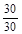 |
|
|
|
|
нд |
нд |
30 |
нд |
|
Категорий А, Б или В1 - В4 |
|
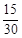 |
|
|
|
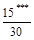 |
|
|
нд |
|
Категории Г |
|
|
НН |
НН |
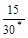 |
|
|
|
нд |
|
Категории Д |
|
|
НН |
НН |
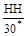 |
|
|
|
нд |
|
Коридор производственного здания |
|
|
|
|
|
|
|
|
нд |
|
Общественные и административно-бытовые здания |
нд |
|
|
|
|
|
|
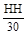 |
нд |
|
Бытовые (санузлы, душевые, умывальные, бани и т.п.) |
|
|
|
|
|
|
|
|
нд |
|
Коридор (кроме производственных зданий) |
нд |
нд |
нд |
|
|
|
|
|
|
|
Жилые |
нд |
нд |
нд |
|
|
|
|
|
|
|
НД - не допускается прокладка транзитных воздуховодов. НН - не нормируется предел огнестойкости транзитных воздуховодов. * EI 15 - в зданиях III или IV степени огнестойкости. ** Не допускается прокладка через помещения категорий А и Б. *** Не допускается прокладка воздуховодов из помещений категорий А и Б. Примечания 1 Значения предела огнестойкости приведены в таблице в виде дроби: в числителе - в пределах обслуживаемого этажа; в знаменателе - за пределами обслуживаемого этажа. 2 В общественных зданиях допускается прокладывать транзитные воздуховоды систем вентиляции для общественных и административно-бытовых помещений через склады и кладовые категорий В1 - В4 при условии установки противопожарных клапанов в местах пересечения транзитными воздуховодами противопожарных преград (перегородок и перекрытий) с нормируемым пределом огнестойкости помещений складов и кладовых. |
|||||||||
Для воздуховодов, прокладываемых через несколько различных помещений одного этажа, следует предусматривать одинаково большее значение предела огнестойкости.
Транзитные воздуховоды, прокладываемые через чердак и подполье, следует предусматривать с пределом огнестойкости EI 30.
7.11.9 Транзитные воздуховоды и коллекторы систем любого назначения в пределах одного пожарного отсека допускается проектировать:
а) из материалов горючих Г1 с пределом огнестойкости ниже нормируемого при условии прокладки каждого воздуховода в отдельной шахте, кожухе или гильзе из негорючих материалов с пределом огнестойкости EI 30;
б) из негорючих материалов с пределом огнестойкости ниже нормируемого, но не менее EI 15 при условии прокладки транзитных воздуховодов и коллекторов (кроме воздуховодов и коллекторов для производственных помещений категорий А и Б, а также для складов категорий А, Б, В1, В2) в общих шахтах с ограждающими конструкциями, имеющими предел огнестойкости не менее EI 45, и установки противопожарных клапанов на каждом воздуховоде, пересекающем ограждающие конструкции шахты;
в) из негорючих материалов с пределом огнестойкости ниже нормируемого, предусматривая при прокладке транзитных воздуховодов (кроме помещений и складов категорий А, Б, складов категорий В1, В2, а также жилых помещений) установку противопожарных клапанов при пересечении воздуховодами каждой противопожарной преграды с нормируемым пределом огнестойкости.
Предел огнестойкости воздуховодов и коллекторов (кроме транзитных), прокладываемых в помещениях для вентиляционного оборудования, а также воздуховодов и коллекторов, прокладываемых снаружи здания, не нормируется.
7.11.10 Транзитные воздуховоды, прокладываемые за пределами обслуживаемого пожарного отсека, после пересечения ими противопожарной преграды обслуживаемого пожарного отсека следует проектировать с пределом огнестойкости EI 150.
Указанные транзитные воздуховоды допускается проектировать с пределом огнестойкости ниже нормируемого, но не менее EI 30 при прокладке их в отдельной шахте с ограждающими конструкциями с пределом огнестойкости EI 150.
7.11.11 Транзитные воздуховоды и коллекторы систем любого назначения из разных пожарных отсеков допускается прокладывать в общих шахтах с ограждающими конструкциями из негорючих материалов с пределом огнестойкости не менее EI 150 при условии:
а) транзитные воздуховоды и коллекторы в пределах обслуживаемого пожарного отсека предусматриваются с пределом огнестойкости EI 30, поэтажные ответвления присоединяются к вертикальным коллекторам через противопожарные клапаны;
б) транзитные воздуховоды систем другого пожарного отсека предусматриваются с пределом огнестойкости EI 150;
в) транзитные воздуховоды систем другого пожарного отсека предусматриваются с пределом огнестойкости EI 60 при условии установки противопожарных клапанов на воздуховодах в местах пересечения ими каждой противопожарной преграды с нормируемым пределом огнестойкости REI 150 и более.
7.11.12 Транзитные воздуховоды систем, обслуживающих тамбур-шлюзы при помещениях категорий А и Б, а также систем местных отсосов взрывоопасных смесей следует проектировать:
а) в пределах одного пожарного отсека - с пределом огнестойкости EI 30;
б) за пределами обслуживаемого отсека - с пределом огнестойкости EI 150.
7.11.13 Противопожарные клапаны, устанавливаемые в отверстиях и в воздуховодах, пересекающих противопожарные преграды, следует предусматривать с учетом требований 12.4 с пределами огнестойкости:
EI 90 - при нормируемом пределе огнестойкости противопожарной преграды REI 150 и более;
EI 60 - при нормируемом пределе огнестойкости противопожарной преграды REI 60;
EI 30 - при нормируемом пределе огнестойкости противопожарной преграды REI 45 (EI 45);
EI 15 - при нормируемом пределе огнестойкости противопожарной преграды REI 15 (EI 15).
В других случаях противопожарные клапаны следует предусматривать с пределами огнестойкости не менее нормируемых для воздуховодов, на которых они устанавливаются, но не менее EI 15. Пожарно-технические характеристики противопожарных клапанов всех типов должны соответствовать НПБ 241.
7.11.14 Воздуховоды не следует прокладывать:
а) транзитные - через лестничные клетки (за исключением воздуховодов систем приточной противодымной вентиляции, обслуживающих эти лестничные клетки) и через помещения убежищ;
б) обслуживающие помещения категорий А и Б и систем местных отсосов взрывоопасных смесей - в подвалах и в подпольных каналах;
в) напорные участки воздуховодов систем местных отсосов взрывоопасных смесей, а также вредных веществ 1-го и 2-го классов опасности или неприятно пахнущих веществ - через другие помещения. Допускается прокладывать указанные воздуховоды класса П сварными без разъемных соединений.
7.11.15 Места прохода транзитных воздуховодов через стены, перегородки и перекрытия зданий (в том числе в кожухах и шахтах) следует уплотнять негорючими материалами, обеспечивая нормируемый предел огнестойкости пересекаемой ограждающей конструкции, за исключением мест прохода через перекрытия (в пределах обслуживаемого отсека) в шахтах с транзитными воздуховодами, выполненными согласно 7.11.9 б), 7.11.11 а), б), в).
7.11.16 Внутри воздуховодов, а также снаружи на расстоянии не менее 100 мм от их стенок не допускается размещать газопроводы и трубопроводы с горючими веществами, кабели, электропроводку и канализационные трубопроводы; не допускается также пересечение воздуховодов этими коммуникациями. В шахтах с воздуховодами систем вентиляции не допускается прокладывать трубопроводы бытовой и производственной канализации.
7.11.17 Воздуховоды общеобменных вытяжных систем и систем местных отсосов смеси воздуха с горючими газами легче воздуха следует проектировать с подъемом не менее 0,005 в направлении движения газовоздушной смеси.
7.11.18 Воздуховоды, в которых возможны оседание или конденсация влаги или других жидкостей, следует проектировать с уклоном не менее 0,005 в сторону движения воздуха и предусматривать дренирование.
8.1 Системы приточно-вытяжной противодымной вентиляции зданий (далее - противодымной вентиляции) следует предусматривать для обеспечения безопасной эвакуации людей из здания при пожаре, возникшем в одном из помещений. Системы противодымной вентиляции должны быть автономными для каждого пожарного отсека.
8.2 Системы вытяжной противодымной вентиляции для удаления продуктов горения при пожаре следует предусматривать:
а) из коридоров и холлов жилых, общественных, административно-бытовых и многофункциональных зданий высотой более 28 м. Высота здания (для эвакуации людей) определяется разностью отметок поверхности проезда для пожарных автомашин и нижней отметки открывающегося окна (проема) в наружной стене верхнего этажа (не считая верхнего технического);
б) из коридоров (туннелей) подвальных и цокольных этажей без естественного освещения их световыми проемами в наружных ограждениях (далее - без естественного освещения) жилых, общественных, административно-бытовых, производственных и многофункциональных зданий при выходах в эти коридоры из помещений, предназначенных для постоянного пребывания людей (независимо от количества людей в этих помещениях);
в) из коридоров длиной более 15 м без естественного освещения для производственных и складских зданий категорий А, Б, В1 - В2 с числом этажей два и более, а также для производственных зданий категории В3, общественных и многофункциональных зданий с числом этажей шесть и более;
г) из общих коридоров и холлов зданий различного назначения с незадымляемыми лестничными клетками;
д) из коридоров без естественного освещения жилых зданий, в которых расстояние от двери наиболее удаленной квартиры до выхода непосредственно в лестничную клетку или до выхода в тамбур, ведущий в воздушную зону незадымляемой лестничной клетки типа Н1, более 12 м;
е) из атриумов зданий высотой более 28 м, а также из атриумов высотой более 15 м и пассажей с дверными проемами или балконами, выходящими в пространство атриумов и пассажей;
ж) из лестничных клеток типа Л2 с открываемыми автоматически при пожаре фонарями зданий стационаров лечебных учреждений;
з) из каждого производственного или складского помещения с постоянными рабочими местами без естественного освещения или с естественным освещением через окна и фонари, не имеющие механизированных приводов для открывания фрамуг в окнах (на уровне 2,2 м и выше от пола до низа фрамуг) и проемов в фонарях (в обоих случаях площадью, достаточной для удаления дыма при пожаре), если помещения отнесены к категориям А, Б, В1 - В3, а также В4, Г или Д в зданиях IV степени огнестойкости;
и) из каждого помещения без естественного освещения:
- общественного, предназначенного для массового пребывания людей;
- площадью 50 м2 и более с постоянными рабочими местами, предназначенного для хранения или использования горючих веществ и материалов;
- торговых залов;
- гардеробных площадью 200 м2 и более.
Допускается проектировать удаление продуктов горения через примыкающий коридор из помещений площадью до 200 м2: производственных категорий В1 - В3 или предназначенных для хранения или использования горючих веществ и материалов.
8.3 Требования 8.2 не распространяются:
а) на помещения (кроме помещений категорий А и Б) площадью до 200 м2, оборудованные установками автоматического водяного или пенного пожаротушения;
б) на помещения, оборудованные установками автоматического газового или порошкового пожаротушения;
в) на коридор и холл, если из всех помещений, имеющих двери в этот коридор или холл, проектируется непосредственное удаление продуктов горения.
Примечание - Если на площади основного помещения, для которого предусмотрено удаление продуктов горения, размещены другие помещения, каждое площадью до 50 м2, то удаление продуктов горения из этих помещений допускается не предусматривать.
8.4 Расход продуктов горения, удаляемых вытяжной противодымной вентиляцией, следует определять по расчету с учетом удельной пожарной нагрузки, температуры удаляемых продуктов горения, параметров наружного воздуха, геометрических характеристик объемно- планировочных элементов и положения проемов:
а) в коридорах по 8.2 а), б), в), г), д) - для каждого коридора длиной не более 45 м;
б) в помещениях по 8.2 е), ж), з), и) - для каждой дымовой зоны площадью не более 3000 м2.
8.5 При определении расхода удаляемых продуктов горения следует учитывать:
а) подсос воздуха через неплотности дымовых шахт, каналов и воздуховодов в соответствии с 7.11.7;
б) подсос воздуха Gv, кг/ч, через неплотности закрытых дымовых клапанов по данным изготовителей, но не более чем по формуле
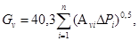
где Аvi - площадь проходного сечения каждого клапана, м2;
∆Pi - разность давлений, Па, на этажах по обе стороны каждого клапана;
п - число закрытых клапанов в системе при пожаре.
8.6 Системы вытяжной противодымной вентиляции, предназначенные для защиты коридоров, следует проектировать отдельными от систем, предназначенных для защиты помещений.
8.7 При удалении продуктов горения из коридоров дымоприемные устройства следует размещать на шахтах под потолком коридора, но не ниже верхнего уровня дверного проема. Допускается установка дымоприемных устройств на ответвлениях к дымовым шахтам. Длина коридора, обслуживаемого одним дымоприемным устройством, должна быть не более 45 м.
8.7 (Исправлена опечатка в официальном издании).
8.8 При удалении продуктов горения непосредственно из помещений площадью более 3000 м2 их необходимо разделять на дымовые зоны площадью не более 3000 м2 каждая, а также учитывать возможность возникновения пожара в одной из зон. Площадь помещения, обслуживаемую одним дымоприемным устройством, следует принимать не более 1000 м2.
8.9 Удаление продуктов горения непосредственно из помещений одноэтажных зданий, как правило, следует предусматривать вытяжными системами с естественным побуждением через шахты с дымовыми клапанами, дымовые люки или открываемые незадуваемые фонари.
Из примыкающей к окнам зоны шириной ≤ 15 м допускается удаление дыма через оконные фрамуги (створки), низ которых находится на уровне не менее чем 2,2 м от пола.
В многоэтажных зданиях следует предусматривать, как правило, вытяжные системы с механическим побуждением.
8.10 Для систем вытяжной противодымной вентиляции следует предусматривать:
а) вентиляторы (в том числе радиальные крышные вентиляторы) с пределами огнестойкости 0,5 ч / 200 °С, 0,5 ч / 300 °С, 1,0 ч / 300 °С, 2,0 ч / 400 °С, 1,0 ч / 600 °С, 1,5 ч / 600 °С в зависимости от расчетной температуры перемещаемых газов согласно НПБ 253 и в исполнении, соответствующем категории обслуживаемых помещений;
б) воздуховоды и каналы согласно 7.11.3 из негорючих материалов класса П с пределами огнестойкости не менее:
- EI 150 - для транзитных воздуховодов и шахт за пределами обслуживаемого пожарного отсека; при этом на транзитных участках воздуховодов и шахт, пересекающих противопожарные преграды пожарных отсеков, не следует устанавливать противопожарные клапаны;
- EI 45 - для вертикальных воздуховодов и шахт в пределах обслуживаемого пожарного отсека при удалении продуктов горения непосредственно из обслуживаемых помещений;
- EI 30 - в остальных случаях в пределах обслуживаемого пожарного отсека;
в) дымовые клапаны с автоматически и дистанционно управляемыми приводами (без термоэлементов) с пределами огнестойкости не менее:
- EI 45 - для непосредственно обслуживаемых помещений;
- EI 30 - для коридоров и холлов при установке дымовых клапанов на ответвлениях воздуховодов от дымовых вытяжных шахт;
- EI 30 - для коридоров и холлов при установке дымовых клапанов непосредственно в проемах шахт;
- допускается применять дымовые клапаны с ненормируемым пределом огнестойкости для систем, обслуживающих одно помещение (кроме помещений категорий А, Б, В1 - В3);
г) выброс продуктов горения, как правило, над покрытиями зданий и сооружений на расстоянии не менее 5 м от воздухозаборных устройств систем приточной противодымной вентиляции; выброс в атмосферу следует предусматривать на высоте не менее 2 м от кровли из горючих материалов; допускается выброс продуктов горения на меньшей высоте при защите кровли негорючими материалами на расстоянии не менее 2 м от края выбросного отверстия. Допускается выброс продуктов горения:
- через дымовые люки в проемах покрытий зданий, оснащенные автоматически и дистанционно управляемыми приводами, обеспечивающими открытие люков при пожаре, в районах с расчетной скоростью ветра до 11 м/с и при снеговой нагрузке до 60 кг/м2;
- через решетки на фасаде без оконных проемов или на фасаде с окнами на расстоянии не менее 5 м по горизонтали и по вертикали от окон, или на фасаде с окнами при обеспечении скорости выброса не менее 20 м/с;
- через отдельные шахты на расстоянии не менее 15 м от наружных стен с окнами или от воздухозаборных или выбросных устройств систем вентиляции;
д) установку обратных клапанов у вентиляторов. Допускается не предусматривать установку обратных клапанов, если в обслуживаемом производственном помещении имеются избытки теплоты более 23 Вт/м3 (при переходных условиях).
Выброс продуктов горения из шахт, отводящих дым из нижележащих этажей и подвалов, допускается предусматривать в аэрируемые пролеты плавильных, литейных, прокатных и других горячих цехов. При этом устье шахт следует размещать на уровне не менее 6 м от пола аэрируемого пролета (на расстоянии не менее 3 м по вертикали и 1 м по горизонтали от строительных конструкций зданий) или на уровне не менее 3 м от пола при устройстве дренчерного орошения устья дымовых шахт. Дымовые клапаны на этих шахтах устанавливать не следует.
8.11 Вентиляторы для удаления продуктов горения следует размещать в отдельных помещениях, выгороженных противопожарными перегородками 1-го типа, предусматривая вентиляцию, обеспечивающую при пожаре температуру воздуха, не превышающую 60 °С в теплый период года (параметры Б) или соответствующую техническим данным изготовителей вентиляторов.
Вентиляторы противодымных вытяжных систем допускается размещать на кровле и снаружи здания (кроме районов с расчетной температурой наружного воздуха минус 40 °С и ниже - параметры Б) с ограждениями для защиты от доступа посторонних лиц. Допускается установка вентиляторов непосредственно в каналах при условии обеспечения соответствующих пределов огнестойкости вентиляторов и каналов.
8.12 Удаление газов и дыма после пожара из помещений, защищаемых установками газового и порошкового пожаротушения, следует предусматривать системами с механическим побуждением из нижней и верхней зон помещений с компенсацией удаляемого объема газов и дыма приточным воздухом. Для удаления газов и дыма после действия автоматических установок газового или порошкового пожаротушения допускается использовать также системы основной и аварийной вентиляции или передвижные вентустановки.
В местах пересечения воздуховодами (кроме транзитных) ограждений помещения, защищаемого установками газового или порошкового пожаротушения, следует предусматривать противопожарные клапаны с пределом огнестойкости не менее EI 15:
нормально открытые - в приточных и вытяжных системах защищаемого помещения;
нормально закрытые - в системах для удаления дыма и газа после пожара;
двойного действия - в системах основной вентиляции защищаемого помещения, используемых для удаления газов и дыма после пожара.
8.13 Подачу наружного воздуха при пожаре приточной противодымной вентиляцией следует предусматривать:
а) в лифтовые шахты (при отсутствии у выхода из них тамбур-шлюзов с подпором воздуха при пожаре) в зданиях с незадымляемыми лестничными клетками;
б) в шахты лифтов, имеющих режим «перевозка пожарных подразделений»;
в) в незадымляемые лестничные клетки типа Н2;
г) в тамбур-шлюзы при незадымляемых лестничных клетках типа Н3;
д) в тамбур-шлюзы перед лифтами (в том числе в два последовательно расположенных) в подвальных и цокольных этажах;
е) в тамбур-шлюзы при лестницах 2-го типа, ведущих в помещения первого этажа, из подвального (или цокольного) этажа, в помещениях которого применяются или хранятся горючие вещества и материалы. В плавильных, литейных, прокатных и других горячих цехах в тамбур-шлюзы допускается подавать воздух, забираемый из аэрируемых пролетов здания;
ж) в тамбур-шлюзы на входах в атриум и пассажей с уровней подвальных этажей и в нижние части атриумов и пассажей по 8.2 е).
8.14 Расход наружного воздуха для приточной противодымной вентиляции следует рассчитывать на обеспечение избыточного давления не менее 20 Па:
а) в лифтовых шахтах - при закрытых дверях на всех этажах (кроме основного посадочного этажа);
б) в незадымляемых лестничных клетках типа Н2 при открытых дверях на пути эвакуации из коридоров и холлов на этаже пожара в лестничную клетку и из здания наружу при закрытых дверях из коридоров и холлов на всех этажах;
в) в тамбур-шлюзах на этаже пожара при выходах в незадымляемые лестничные клетки типа Н3 и в лестницы 2-го типа, на входах в атриумы с уровней подвальных этажей, перед лифтовыми холлами подземных автостоянок - при одной открытой двери тамбур-шлюзов, в остальных тамбур-шлюзах - при закрытых дверях.
Расход воздуха, подаваемого в тамбур-шлюзы с одной открытой дверью, следует определять расчетом по условию обеспечения средней скорости (но не менее 1,3 м/с) истечения воздуха через открытый дверной проем и с учетом совместного действия вытяжной противодымной вентиляции. Расход воздуха, подаваемого в тамбур-шлюзы при закрытых дверях, необходимо рассчитывать на утечки воздуха через неплотности дверных притворов.
Величину избыточного давления следует определять относительно смежных помещений с защищаемым помещением.
8.15 При расчете параметров приточной противодымной вентиляции следует принимать:
а) температуру наружного воздуха и скорость ветра для холодного периода года (параметры Б);
б) избыточное давление воздуха не менее 20 Па и не более 150 Па - в шахтах лифтов, в незадымляемых лестничных клетках типа Н2, в тамбур-шлюзах незадымляемых лестничных клеток типа Н3 относительно смежных помещений (коридоров, холлов);
в) площадь одной большей створки двухстворчатых дверей;
г) кабины лифтов остановленными на основном посадочном этаже, двери в лифтовую шахту на этом этаже - открытыми.
8.16 Для систем приточной противодымной защиты следует предусматривать:
а) установку вентиляторов в отдельных от вентиляторов другого назначения помещениях, выгороженных противопожарными перегородками 1-го типа. Допускается размещать вентиляторы на кровле и снаружи зданий, кроме районов с температурой наружного воздуха минус 40 °С и ниже (параметры Б), с ограждениями для защиты от доступа посторонних лиц;
б) воздуховоды и каналы согласно 7.11.3 из негорючих материалов класса П с пределами огнестойкости не менее:
- EI 150 - при прокладке воздухозаборных шахт и приточных каналов за пределами обслуживаемого пожарного отсека;
- EI 30 - при прокладке воздухозаборных шахт и приточных каналов в пределах обслуживаемого пожарного отсека;
в) установку обратного клапана у вентилятора;
г) приемные отверстия для наружного воздуха, размещаемые на расстоянии не менее 5 м от выбросов продуктов горения систем противодымной вытяжной вентиляции;
д) противопожарные нормально закрытые клапаны с пределами огнестойкости:
- EI 120 - для систем по 8.13 б);
- EI 30 - для систем по 8.13 а), в), г), д), е), ж).
Противопожарные клапаны не следует устанавливать в плавильных, литейных, прокатных и других горячих цехах.
9.1 Систему холодоснабжения для охлаждения воздуха и воды следует проектировать от естественных и искусственных источников холода, если нормируемые метеорологические условия не могут быть обеспечены установками прямого или косвенного испарительного охлаждения.
9.2 Систему холодоснабжения следует, как правило, проектировать из двух или большего числа установок охлаждения; допускается проектировать одну машину или одну установку охлаждения с регулируемой мощностью.
Число машин для холодоснабжения систем кондиционирования производственных помещений следует обосновывать допустимыми отклонениями параметров при выходе из строя одной машины большей мощности.
9.3 Резервные холодильные машины допускается предусматривать для систем кондиционирования, работающих круглосуточно.
9.4 Потери холода в оборудовании и трубопроводах систем холодоснабжения следует определять расчетом, но принимать не более 10 % мощности холодильной установки.
9.5 Поверхностные воздухоохладители (испарители хладонов) и контактные воздухоохладители (форсуночные камеры и др.), присоединенные по одноконтурной водяной (рассольной) системе холодоснабжения с закрытыми испарителями хладонов, а также кондиционеры автономные моноблочные, раздельного типа и с регулируемым объемом хладона допускается применять:
а) для помещений, в которых не используется открытый огонь;
б) для помещений, в которых не допускается рециркуляция воздуха, кроме помещений по 7.4.5;
в) если испарители включены в автономный контур циркуляции хладона одной холодильной машины;
г) если масса хладона при аварийном выбросе его из контура циркуляции в меньшее из обслуживаемых помещений не превысит допустимой аварийной концентрации (ДАК) 310 г на 1 м3 расхода наружного воздуха, подаваемого в помещение, или на 1 м3 объема помещения при отсутствии общеобменной приточно-вытяжной вентиляции. Значение ДАК допускается принимать по данным производителя хладона при наличии гигиенического сертификата.
9.6 Водяные (рассольные) системы холодоснабжения следует проектировать, как правило, с баком-аккумулятором.
9.7 Температуру и качество воды, охлаждающей аппараты холодильных установок, следует принимать в соответствии с техническими условиями на машины.
9.8 Температуру кипения хладагента в кожухотрубных испарителях (с межтрубным кипением агента), охлаждающих воду, следует принимать не ниже плюс 2 °С, для других испарителей - не ниже минус 2 °С.
9.9 Холодильные установки компрессионного типа с хладагентом хладон при содержании масла в любой из холодильных машин 250 кг и более не допускается размещать в помещениях производственных, общественных и административно-бытовых зданий, если над их перекрытием или под полом имеются помещения с массовым постоянным или временным (кроме аварийных ситуаций) пребыванием людей.
В жилых зданиях, лечебно-профилактических учреждениях (стационарах), интернатах для престарелых и инвалидов, детских учреждениях и гостиницах допускается размещать холодильные установки с хладагентом хладон производительностью по холоду одной единицы оборудования не более 200 кВт, если над их перекрытием или под полом имеются помещения с массовым постоянным или временным (кроме аварийных ситуаций) пребыванием людей.
Автономные моноблочные кондиционеры, а также кондиционеры раздельного типа допускается размещать в зданиях и помещениях различного назначения, кроме помещений, в которых не допускается рециркуляция, за исключением помещений по 7.4.5.
Наружные блоки кондиционеров раздельного типа мощностью по холоду до 5 кВт допускается размещать на незастекленных лоджиях, открытых лестничных клетках, покрытых переходах. При этом должны обеспечиваться шумозащита, а также отвод конденсата.
9.10 Холодильные установки с хладагентом аммиак допускается применять для холодоснабжения производственных помещений, размещая установки в отдельных зданиях, пристройках или отдельных помещениях одноэтажных производственных зданий. Конденсаторы и испарители допускается размещать на открытых площадках на расстоянии не менее 2 м от стены здания.
Применение поверхностных воздухоохладителей с хладагентом аммиак не допускается.
9.11 Пароэжекторные холодильные машины следует размещать на открытых площадках или в производственных зданиях.
9.12 Бромисто-литиевые холодильные машины следует размещать на открытых площадках. Допускается размещение бромисто-литиевых машин в отдельных помещениях зданий различного назначения.
9.13 Компрессорные и абсорбционные холодильные машины следует применять для работы по циклу теплового насоса при технико-экономическом обосновании или по заданию на проектирование.
9.14 Помещения, в которых размещаются бромисто-литиевые и пароэжекторные холодильные машины и тепловые насосы с хладагентом хладон, следует относить к категории Д, а с хладагентом аммиак - к категории Б. Хранение масла следует предусматривать в отдельном помещении.
9.15 Устье выхлопных труб для хладона из предохранительных клапанов следует предусматривать не менее чем на 2 м выше окон и дверей и воздухоприемных отверстий и не менее чем на 5 м - выше уровня земли. Выхлоп хладагента следует направлять вверх.
Устье выхлопных труб для аммиака следует выводить на высоту не менее чем на 3 м выше кровли.
9.16 В помещении холодильных установок следует предусматривать общеобменную вентиляцию, рассчитанную на удаление избытков теплоты.
При этом следует предусматривать системы вытяжной вентиляции с механическим побуждением, обеспечивающие не менее:
а) 3 обменов в 1 ч, а при аварии - 5 воздухообменов в 1 ч при применении хладонов;
б) 4 обменов, а при аварии - 11 воздухообменов в 1 ч при применении аммиака.
10.1 Воздух, выбрасываемый в атмосферу из систем местных отсосов и общеобменной вентиляции производственных помещений, содержащий загрязняющие вредные вещества (далее - «пылегазовоздушная смесь»), следует, как правило, очищать. Кроме того, необходимо рассеивать в атмосфере остаточные количества вредных веществ. В соответствии с «Методикой расчета концентрации в атмосферном воздухе вредных веществ, содержащихся в выбросах предприятий» [1] концентрации вредных веществ в атмосфере от вентиляционных выбросов данного объекта с учетом фоновых концентраций от других выбросов не должны превышать:
а) предельно допустимых максимальных разовых концентраций вредных веществ в атмосферном воздухе населенных мест (далее - ПДКп), установленных Госкомсанэпиднадзором России, или 0,8 ПДКп в зонах санитарно-защитной охраны курортов, крупных санаториев, домов отдыха и в зонах отдыха городов или меньших величин, установленных для данного объекта. Для вредных веществ с не установленными Госкомсанэпиднадзором России максимально разовыми концентрациями в качестве ПДКп следует принимать среднесуточные предельно допустимые концентрации вредных веществ в атмосферном воздухе населенных мест;
б) 0,3 предельно допустимых концентраций вредных веществ для рабочей зоны производственных помещений (далее - ПДКw,z) в воздухе, поступающем в помещение производственных и административно-бытовых зданий через приемные устройства, открываемые окна и проемы, используемые для притока воздуха.
10.2 Допускается не предусматривать очистку выбросов пылегазовоздушной смеси из систем с естественным побуждением, а также из систем источников малой мощности с механическим побуждением при соблюдении требований 10.1 или если очистка выбросов не требуется в соответствии с разделом проекта «Охрана атмосферного воздуха от загрязнений».
Рассеивание в атмосфере вредных веществ из систем аварийной вентиляции следует проектировать по данным технологической части проекта.
10.3 Вентиляционным источником малой мощности следует считать один источник или условный источник, заменяющий группу источников, находящихся на кровле здания в пределах площади круга диаметром 20 м, с общим расходом пылегазовоздушной смеси L ≤ 10 м3/с, концентрацией для одного или условного источника q, мг/м3, по каждому вредному веществу, не превышающей q1, q2 и q3, а для пыли, кроме того, не более 100 мг/м3. Значения q1, q2 и q3 следует определять по формулам:
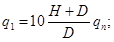
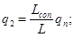
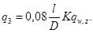
H - высота расположения устья источника над уровнем земли, м; для группы источников высота H определяется как высота условного источника, равная среднему арифметическому из высот всех источников группы;
D - диаметр устья источника, м; для группы источников диаметр условного источника равен:
D = (Da2 + Db2 + ... + Di2)05, (10)
если устье источника не круглое, то за D следует принимать диаметр, определяемый по формуле
D = 1,13A0,5,
где А - площадь поперечного сечения устья источника м2;
Lcon - условный расход атмосферного воздуха для разбавления выбрасываемых вредных веществ; при расстояниях от источника до границы населенного пункта 50, 100, 300, 500 м и более условный расход воздуха равен соответственно 60, 250, 2000, 6000 м3/с;
L - расход пылегазовоздушной смеси, м3/с, для одного конкретного или условного источника;
l - расстояние, м, между устьем одного источника и приемным устройством для наружного воздуха по горизонтали: при l < 10 D следует принимать l = 10 D; при l > 60 l = 60 D.
Для группы i источников расстояние условного источника от приемного отверстия l равно
l = (la+ lb + ... + li) / i, (11)
где lа, lb...li, - расстояние, м, по горизонтали каждого из источников группы, оси струй которых при направлении ветра в сторону рассматриваемого приемного устройства для наружного воздуха вписываются в его габариты;
К - коэффициент, характеризующий уменьшение концентрации вредных веществ в струе, определяемый по приложению П;
qn, qw,z - предельно допустимые концентрации, мг/м3, вредных веществ соответственно по отношению к воздуху населенных мест и к воздуху рабочей зоны.
Для одного источника и условного источника с выбросом вредных веществ, обладающих эффектом суммации действия, условная концентрация q, мг/м3, приведенная к одному веществу, определяется:
а) при сравнении с q1 и q2 по формуле
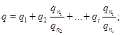
б) при сравнении с q3 по формуле
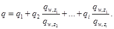
q1...qi, - концентрация вредных веществ, мг/м3, обладающих эффектом суммации действия;
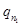 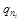 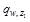 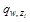
1...i - число вредных веществ, обладающих эффектом суммации по отношению к воздуху рабочей зоны.
Для источника вредных веществ, обладающих эффектом суммации, qn и qw,z в формулах (7) - (9) принимаются равными ПДКn и ПДКw,z того вещества, для которого определена условная концентрация q, мг/м3.
10.4 Выбросы пылегазовоздушной смеси из систем с механическим побуждением следует предусматривать через трубы и шахты, не имеющие зонтов, вертикально вверх из систем:
а) общеобменной вентиляции из помещений категорий А и Б или из систем, удаляющих вредные вещества 1-го, 2-го классов опасности и неприятно пахнущие вещества;
б) местных отсосов вредных и неприятно пахнущих веществ и взрывоопасных смесей.
10.5 Выбросы в атмосферу из систем вентиляции производственных помещений следует размещать по расчету или на расстоянии от приемных устройств для наружного воздуха не менее 10 м по горизонтали или на 6 м по вертикали при горизонтальном расстоянии менее 10 м. Кроме того, выбросы из систем местных отсосов вредных веществ следует размещать на высоте не менее 2 м над кровлей более высокой части здания, если расстояние до ее выступа менее 10 м.
Выбросы из системы аварийной вентиляции следует размещать на высоте не менее 3 м от земли до нижнего края отверстия.
10.6 Расстояние от источников выброса систем местных отсосов взрывоопасной парогазовоздушной смеси до ближайшей точки возможных источников воспламенения (искры, газы с высокой температурой и др.) lz, м, следует принимать, не менее:
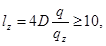
где D - диаметр устья источника, м;
q - концентрация горючих газов, паров, пыли в устье выброса, мг/м3;
qz - концентрация горючих газов, паров и пыли, равная 10 % их нижнего концентрационного предела распространения пламени, мг/м3.
10.7 Выбросы от систем вытяжной вентиляции следует, как правило, проектировать отдельными, если хотя бы в одной из труб или шахт возможно отложение горючих веществ или если при смешении выбросов возможно образование взрывоопасных смесей.
Допускается соединение в одну трубу или шахту таких выбросов, предусматривая вертикальные разделки с пределом огнестойкости 0,5 ч от места присоединения каждого воздуховода до устья.
11.1 Отопление, вентиляцию и кондиционирование следует, как правило, проектировать, используя тепловые вторичные энергетические ресурсы (ВЭР):
а) воздуха, удаляемого системами общеобменной вентиляции и местных отсосов;
б) технологических установок, передаваемых в виде тепло- и холодоносителей, пригодных для отопления, вентиляции и кондиционирования.
Использование теплоты воздуха из систем вентиляции с естественным побуждением допускается проектировать при технико-экономическом обосновании.
11.2 Целесообразность использования ВЭР для отопления, вентиляции и кондиционирования, выбор схем утилизации теплоты (холода), теплоутилизационного оборудования и теплонасосных установок должны быть обоснованы технико-экономическим расчетом с учетом неравномерности поступления ВЭР и теплопотребления в системах.
11.3 Концентрация вредных веществ в приточном воздухе при использовании теплоты (холода) ВЭР не должна превышать указанной в 5.10.
11.4 В воздухо-воздушных и газовоздушных теплоутилизаторах в местах присоединения воздуховодов следует обеспечивать давление приточного воздуха больше давления удаляемого воздуха или газа. При этом максимальная разность давлений не должна превышать величины, допустимой по техническим условиям на теплоутилизационное оборудование.
В воздухо-воздушных или газовоздушных теплоутилизаторах следует учитывать перенос вредных веществ за счет конструктивных особенностей аппарата.
11.5 В воздухо-воздушных теплоутилизаторах (а также в теплоутилизаторах на базе тепловых труб) для нагревания (охлаждения) приточного воздуха не следует использовать воздух:
а) из помещений категорий А и Б; допускается использовать воздух из помещений категорий А и Б для нагревания воздуха этих помещений при применении оборудования систем во взрывозащищенном исполнении;
б) из системы местных отсосов взрывоопасных смесей пыли или воздуха, содержащего вредные вещества 1-го класса опасности. Допускается использование воздуха из систем местных отсосов невзрывоопасных пылевоздушных смесей после их очистки от пыли;
в) содержащий осаждающиеся или конденсирующиеся на теплообменных поверхностях вредные вещества 1-го и 2-го классов опасности или имеющие резко выраженные неприятные запахи - в регенеративных теплоутилизаторах, а также в теплоутилизаторах на базе тепловых труб;
г) содержащий болезнетворные бактерии, вирусы, грибки в опасных концентрациях, устанавливаемых Госкомсанэпиднадзором России.
11.6 В теплоутилизаторах для нагревания (охлаждения) приточного воздуха допускается использовать теплоту вредных и горючих жидкостей и газов, применяемых в качестве промежуточного теплоносителя, заключенного в герметизированные трубопроводы и теплообменники, при согласовании с органами надзора; при отсутствии согласования следует использовать дополнительный контур с теплоносителем, не содержащим вредных веществ 1, 2 и 3-го классов опасности, или при содержании их концентрацией, могущей превысить ПДК при аварийном выделении в помещение.
11.7 В контактных теплоутилизаторах (камерах орошения и т.п.) для нагревания (охлаждения) приточного воздуха следует использовать воду питьевого качества или водные растворы, не содержащие вредных веществ.
11.8 При использовании теплоты (холода) вентиляционного воздуха, содержащего осаждающиеся пыли и аэрозоли, следует предусматривать очистку воздуха до концентраций, допустимых по техническим условиям на теплоутилизационное оборудование, а также очистку теплообменных поверхностей от загрязнений.
11.9 В системах утилизации теплоты ВЭР следует предусматривать мероприятия по защите промежуточного теплоносителя от замерзания и образования наледи на теплообменной поверхности теплоутилизаторов.
11.10 Резервное тепло(холодо)снабжение систем, использующих теплоту (холод) ВЭР от вентиляционных систем и технологического оборудования, следует предусматривать при технико-экономическом обосновании.
12.1 Электроустановки систем отопления, вентиляции, кондиционирования и противодымной вентиляции должны отвечать требованиям правил устройства электроустановок (ПУЭ) и государственных стандартов на электроустановки зданий с учетом требований настоящего раздела.
12.2 Электроприемники систем отопления, вентиляции и кондиционирования следует предусматривать той же категории, которая устанавливается для электроприемников технологического или инженерного оборудования здания.
Электроснабжение систем аварийной вентиляции и противодымной защиты, кроме систем для удаления газов и дыма после пожара (8.12), следует предусматривать первой категории. Системы для удаления газов и дыма после пожара допускается проектировать первой категории по заданию на проектирование. При невозможности по местным условиям осуществлять питание электроприемников первой категории от двух независимых источников допускается осуществлять питание их от одного источника ох разных трансформаторов двухтрансформаторной подстанции или от двух близлежащих однотрансформаторных подстанций. При этом подстанции должны быть подключены к разным питающим линиям, проложенным по разным трассам, и иметь устройства автоматического ввода резерва, как правило, на стороне низкого напряжения.
Для приточных систем вентиляции электропитание цепей управления защиты от замораживания следует выполнять по первой категории. Допускается выполнение электропитания по второй категории при организации раздельного питания электропривода вентилятора и щита автоматизации приточной системы.
В цепях управления электроприемников тепловую и максимальную защиту не следует предусматривать.
12.3 В зданиях и помещениях, оборудованных системами противодымной вентиляции, следует предусматривать автоматическую пожарную сигнализацию.
В помещениях, оборудованных системой автоматического водяного (пенного) пожаротушения, зоны дымоудаления должны совпадать с зонами спринклерного пожаротушения.
12.4 Для зданий и помещений, оборудованных автоматическими установками пожаротушения или автоматической пожарной сигнализацией, следует предусматривать автоматическое блокирование электроприемников систем воздушного отопления, кроме воздушно-тепловых завес вентиляции, кондиционирования (далее - системы вентиляции), с электроприемниками систем противодымной защиты для:
а) отключения при пожаре систем вентиляции, кроме систем подачи воздуха в тамбур-шлюзы помещений категорий А и Б, а также в машинные отделения лифтов зданий категорий А и Б. Отключение может производиться:
- централизованно прекращением подачи электропитания на распределительные щиты систем вентиляции;
- индивидуально для каждой системы.
При использовании оборудования и средств автоматизации, комплектно поставляемых с оборудованием систем вентиляции, отключение приточных систем при пожаре следует производить индивидуально для каждой системы с сохранением электропитания цепей защиты от замораживания. При невозможности сохранения питания цепей защиты от замораживания допускается отключение систем подачей сигналов от системы пожарной сигнализации в цепь дистанционного управления системой.
При организации отключения при пожаре с использованием автомата с независимым расцепителем должна проводиться проверка линии передачи сигнала на отключение;
б) включения при пожаре систем (кроме систем, указанных в 8.12) аварийной противодымной защиты;
в) открывания противопожарных и дымовых клапанов в помещении или дымовой зоне, в которой произошел пожар, или в коридоре на этаже пожара и закрывания огнезадерживающих клапанов.
Дымовые и противопожарные клапаны, дымовые люки, фрамуги (створки) и другие открывающиеся устройства шахт, фонарей и окон, предназначенные для противодымной защиты, должны иметь автоматическое, дистанционное и ручное (в местах установки) управление.
Для зданий, в которых предусматривается диспетчеризация инженерного оборудования, а также при размещении большого количества клапанов в труднодоступных местах следует применять дымовые и противопожарные клапаны с автоматическим, дистанционным и ручным управлением.
Примечания
1 Необходимость частичного или полного отключения систем вентиляции, закрытия противопожарных и открытия противопожарных и дымовых клапанов - по заданию на проектирование.
2 Для помещений, имеющих только систему ручной сигнализации о пожаре, следует предусматривать дистанционное отключение систем вентиляции, обслуживающих эти помещения, и включение систем противодымной защиты.
Отключение систем вентиляции и включение систем противодымной защиты может выполняться от сигналов ручных извещателей системы пожарной сигнализации, устанавливаемых на путях эвакуации.
При наличии необходимости включения пожарных насосов от кнопок у пожарных кранов допускается использование этого сигнала на отключение систем вентиляции и включение систем противодымной защиты.
12.5 Помещения, имеющие автоматическую пожарную сигнализацию, должны быть оборудованы дистанционными устройствами, размещенными вне обслуживаемых ими помещений.
При наличии требований одновременного отключения всех систем вентиляции в помещениях категорий А и Б дистанционные устройства следует предусматривать снаружи здания.
Для помещений категорий В1 - В4 допускается предусматривать дистанционное отключение систем вентиляции для отдельных зон площадью не менее 3000 м2.
12.6 Для оборудования металлических трубопроводов и воздуховодов систем отопления и вентиляции помещений категорий А и Б, а также систем местных отсосов, удаляющих взрывоопасные смеси, следует предусматривать заземление в соответствии с требованиями ПУЭ.
12.7 Уровень автоматизации и контроля систем следует выбирать в зависимости от технологических требований, экономической целесообразности и задания на проектирование.
12.8 Параметры теплоносителя (холодоносителя) и воздуха необходимо контролировать в следующих системах:
а) внутреннего теплоснабжения - температуру и давление теплоносителя в общих подающем и обратном трубопроводах в помещении для приточного вентиляционного оборудования; температуру и давление - на выходе из теплообменных устройств;
б) отопления с местными отопительными приборами - температуру воздуха в контрольных помещениях (по требованию технологической части проекта);
в) воздушного отопления и приточной вентиляции - температуру приточного воздуха и температуру воздуха в контрольном помещении (по требованию технологической части проекта);
г) воздушного душирования - температуру подаваемого воздуха;
д) кондиционирования - температуру воздуха наружного, рециркуляционного, приточного после камеры орошения или поверхностного воздухоохладителя и в помещениях; относительную влажность воздуха в помещениях (при ее регулировании);
е) холодоснабжения - температуру холодоносителя до и после каждого теплообменного или смесительного устройства, давление холодоносителя в общем трубопроводе;
ж) вентиляции и кондиционирования с фильтрами, камерами статического давления, теплоутилизаторами - давление и разность давления воздуха (по требованию технических условий на оборудование или по условиям эксплуатации).
12.9 Приборы дистанционного контроля следует предусматривать для измерения основных параметров; для измерения остальных параметров надлежит предусматривать местные приборы (переносные или стационарные).
Для нескольких систем, оборудование которых расположено в одном помещении, следует предусматривать, как правило, один общий прибор для измерения температуры и давления в подающем трубопроводе и индивидуальные приборы на обратных трубопроводах оборудования.
При использовании контроллеров с аналоговыми датчиками допускается не производить установку контрольно-измерительных приборов визуального наблюдения.
12.10 Сигнализацию о работе оборудования («Включено», «Авария») следует предусматривать для систем:
а) вентиляции помещений без естественного проветривания производственных, административно-бытовых и общественных зданий;
б) местных отсосов, удаляющих вредные вещества 1-го и 2-го классов опасности или взрывоопасные смеси;
в) общеобменной вытяжной вентиляции помещений категорий А и Б;
г) вытяжной вентиляции помещений складов категорий А и Б, в которых отклонение контролируемых параметров от нормы может привести к аварии.
Примечание - Требования, относящиеся к помещениям без естественного проветривания, не распространяются на уборные, курительные, гардеробные и другие подобные помещения.
12.11 Дистанционный контроль и регистрацию основных параметров в системах отопления, вентиляции и кондиционирования следует проектировать по технологическим требованиям и по заданию на проектирование.
Объем информации, передаваемой с локального щита автоматизации на диспетчерский щит (пульт), определяется по заданию на проектирование с учетом условий эксплуатации систем.
12.12 Автоматическое регулирование параметров следует проектировать для систем:
а) отопления, выполняемых в соответствии с 6.2.3;
б) воздушного отопления и душирования;
в) приточной и вытяжной вентиляции, работающих с переменным расходом воздуха, а также с переменной смесью наружного и рециркуляционного воздуха;
г) приточной вентиляции (при обосновании);
д) кондиционирования;
е) холодоснабжения;
ж) местного доувлажнения воздуха в помещениях;
з) обогрева полов зданий в соответствии с 6.1.5, за исключением систем, присоединяемых к сетям централизованного теплоснабжения.
Примечание - Для общественных, административно-бытовых и производственных зданий следует, как правило, предусматривать программное регулирование параметров, обеспечивающее снижение расхода теплоты.
12.13 Датчики контроля и регулирования параметров воздуха следует размещать в характерных точках в обслуживаемой или рабочей зоне помещения в местах, где они не подвергаются влиянию нагретых или охлажденных поверхностей и струй приточного воздуха. Допускается размещать датчики в рециркуляционных (или вытяжных) воздуховодах, если параметры воздуха в них не отличаются от параметров воздуха в помещении или отличаются на постоянную величину.
12.14 Автоматическое блокирование следует предусматривать для:
а) открывания и закрывания клапанов наружного воздуха при включении и отключении вентиляторов;
б) открывания и закрывания клапанов систем вентиляции, соединенных воздуховодами для полной или частичной взаимозаменяемости при выходе из строя одной из систем;
в) закрывания противопожарных клапанов (8.12) на воздуховодах для помещений, защищаемых установками газового или порошкового пожаротушения при отключении вентиляторов систем вентиляции этих помещений;
г) включения резервного оборудования при выходе из строя основного по заданию на проектирование;
д) включения и отключения подачи теплоносителя при включении и отключении воздухонагревателей и отопительных агрегатов;
е) включения систем аварийной вентиляции при образовании в воздухе рабочей зоны помещения концентраций вредных веществ, превышающих ПДК или ДАК, а также концентраций горючих веществ в воздухе помещения, превышающих 10 % НКПРП газо-, паро-, пылевоздушной смеси.
12.15 Автоматическое блокирование вентиляторов систем местных отсосов и общеобменной вентиляции, указанных в 7.2.4 и 7.2.5, не имеющих резервных вентиляторов, с технологическим оборудованием должно обеспечивать остановку оборудования при выходе из строя вентилятора, а при невозможности остановки технологического оборудования - включение аварийной сигнализации.
12.16 Для систем с переменным расходом наружного или приточного воздуха следует предусматривать блокировочные устройства для обеспечения минимального расхода наружного воздуха.
12.17 Для вытяжной вентиляции с очисткой воздуха в мокрых пылеуловителях следует предусматривать автоматическое блокирование вентилятора с устройством для подачи воды в пылеуловители, обеспечивая:
а) включение подачи воды при включении вентилятора;
б) остановку вентилятора при прекращении подачи воды или падении уровня воды в пылеуловителе;
в) невозможность включения вентилятора при отсутствии воды или понижении уровня воды в пылеуловителе ниже заданного.
12.18 Включение воздушной завесы следует блокировать с открыванием ворот, дверей и технологических проемов. Автоматическое отключение завесы следует предусматривать после закрытия ворот, дверей или технологических проемов и восстановления нормируемой температуры воздуха помещения, предусматривая сокращение расхода теплоносителя до минимального, обеспечивающего незамерзание воды.
При использовании систем с электровоздухонагревателями следует предусматривать защиту от перегрева воздухонагревателей.
12.19 Автоматическую защиту от замерзания воды в воздухонагревателях следует предусматривать в районах с расчетной температурой наружного воздуха для холодного периода года минус 5 °С и ниже (параметры Б).
12.20 Диспетчеризацию систем следует проектировать для производственных, жилых, общественных и административно-бытовых зданий, в которых предусмотрена диспетчеризация технологических процессов или работы инженерного оборудования.
12.21 Точность поддержания метеорологических условий при кондиционировании (если отсутствуют специальные требования) следует принимать в точках установки датчиков для систем:
а) первого и второго классов - ±1 °С по температуре и ±7 % по относительной влажности;
б) с местными кондиционерами-доводчиками и смесителями с индивидуальными регуляторами температуры прямого действия - ±2 °С.
13.1 Открываемые проемы или окна производственных помещений, предназначенные для естественного притока воздуха в теплый период года, следует размещать, как правило, на высоте не более 1,8 м от пола или рабочей площадки до низа проема, а для притока воздуха в холодный период года - на высоте не менее 3,2 м.
В жилых, общественных и административно-бытовых зданиях следует предусматривать открываемые форточки, фрамуги или другие устройства, предназначенные для подачи приточного воздуха.
13.2 Для створок, фрамуг или жалюзи в световых проемах производственных и общественных зданий, размещаемых на высоте 2,2 м и более от уровня пола или рабочей площадки, следует предусматривать дистанционные и ручные устройства для открывания, размещаемые в пределах рабочей или обслуживаемой зоны помещения, а для используемых при пожаре для удаления дыма - автоматические, дистанционные и ручные (местные) устройства.
13.3 Стационарные лестницы и площадки следует проектировать для обслуживания оборудования, арматуры и приборов, размещаемых выше 1,8 м и более от пола или уровня земли, в соответствии с правилами техники безопасности.
Арматуру, приборы, вентиляционные и отопительные агрегаты, а также автономные кондиционеры допускается ремонтировать и обслуживать с передвижных устройств при соблюдении установленных правил техники безопасности.
13.4 Постоянные рабочие места, расположенные на расстоянии менее 3 м от наружных дверей и 6 м от ворот, следует защищать перегородками или экранами от обдувания холодным воздухом.
13.5 Для ремонта и обслуживания вентиляционного и холодильного оборудования следует разрабатывать строительные конструкции для грузоподъемных машин, предусмотренных 7.10.
13.6 Ограждающие конструкции помещения для вентиляционного оборудования, размещаемого в пределах обслуживаемого пожарного отсека, следует предусматривать с пределом огнестойкости REI 45, двери - с пределом огнестойкости не менее EI 30.
13.7 Ограждающие конструкции помещения для вентиляционного оборудования, размещенного в пределах другого пожарного отсека (7.10.5), следует предусматривать с пределом огнестойкости REI 150, двери - с пределом огнестойкости не менее EI 30.
13.8 Высоту помещения для вентиляционного оборудования следует предусматривать с учетом работы в нем грузоподъемных машин, но не менее 2,2 м от отметки чистого пола до низа выступающих конструкций перекрытий. В помещениях и на рабочих площадках ширину прохода между выступающими частями оборудования, а также между оборудованием и строительными конструкциями следует предусматривать с учетом выполнения монтажных и ремонтных работ, но не менее 0,7 м. Расстояние между оборудованием следует предусматривать, обеспечивая возможность демонтажа и последующего монтажа отдельных элементов оборудования с максимальными габаритами.
13.9 Для монтажа и демонтажа вентиляционного или холодильного оборудования (или замены его частей) следует предусматривать монтажные проемы.
14.1 Водоснабжение камер орошения, увлажнителей и доувлажнителей и других устройств, используемых для обработки приточного и рециркуляционного воздуха, следует предусматривать водой питьевого качества.
14.2 Воду, циркулирующую в камерах орошения и других аппаратах систем вентиляции и кондиционирования, следует фильтровать. При повышенных санитарных требованиях необходимо предусматривать бактерицидную очистку воды.
14.3 Воду технического качества следует предусматривать для мокрых пылеуловителей вытяжных систем (кроме рециркуляционных), а также для промывки приточного и теплоутилизационного оборудования.
14.4 Отвод воды в канализацию следует предусматривать для опорожнения оборудования и систем отопления, тепло- и холодоснабжения и для отвода конденсата.
14.5 Качество воды, охлаждающей аппаратуру холодильных установок, следует принимать по техническим условиям на холодильные машины.
В настоящем документе применяют следующие термины с соответствующими определениями.
Вентиляция - обмен воздуха в помещениях для удаления избытков теплоты, влаги, вредных и других веществ с целью обеспечения допустимых метеорологических условий и чистоты воздуха в обслуживаемой или рабочей зоне при средней необеспеченности 400 ч/г - при круглосуточной работе и 300 ч/г - при односменной работе в дневное время.
Верхняя зона помещения - зона помещения, расположенная выше обслуживаемой или рабочей зоны.
Взрывоопасная смесь - смесь горючих газов, паров, пыли, аэрозолей или волокон с воздухом при нормальных атмосферных условиях (давлении 760 мм рт. ст. и температуре 20 °С), у которой при воспламенении горение распространяется на весь объем несгоревшей смеси и развивается давление взрыва, превышающее 5 кПа. Взрывоопасность веществ, выделяющихся при технологических процессах, следует принимать по заданию на проектирование.
Воздушный затвор - вертикальный участок воздуховода, изменяющий направление движения дыма (продуктов горения) на 180° и препятствующий при пожаре прониканию дыма из нижерасположенных этажей в вышерасположенные.
Вредные вещества - вещества, для которых органами санэпидемнадзора установлена предельно допустимая концентрация (ПДК) вредного вещества.
Дисбаланс - разность расходов воздуха, подаваемого в помещение (здание) и удаляемого из него системами вентиляции с искусственным побуждением, кондиционирования воздуха и воздушного отопления.
Дымовой клапан - клапан с нормируемым пределом огнестойкости, открывающийся при пожаре.
Дымоприемное устройство - отверстие в воздуховоде (канале, шахте) с установленным на нем или на воздуховоде дымовым клапаном, открывающимся при пожаре.
Дымоход - вертикальный канал или трубопровод прямоугольного или круглого сечения для создания тяги и отвода дымовых газов от теплогенератора (котла, печи) и дымоотвода вверх в атмосферу.
Дымоотвод - трубопровод или канал для отвода дымовых газов от теплогенератора до дымохода или наружу через стену здания.
Дымовая зона - часть помещения общей площадью не более 3000 м2, из которой удаляются продукты горения (дым), обеспечивая эвакуацию людей из горящего помещения.
Зона дыхания - пространство радиусом 0,5 м от лица работающего.
Защищаемое помещение - помещение, при входе в которое для предотвращения перетекания воздуха имеется тамбур-шлюз или создается повышенное или пониженное давление воздуха по отношению к смежным помещениям.
Избытки явной теплоты - разность тепловых потоков, поступающих в помещение и уходящих из него при расчетных параметрах наружного воздуха (после осуществления технологических и строительных мероприятий по уменьшению теплопоступлений от оборудования, трубопроводов и солнечной радиации).
Коллектор - участок воздуховода, к которому присоединяются воздуховоды из двух или большего числа этажей.
Кондиционирование воздуха - автоматическое поддержание в закрытых помещениях всех или отдельных параметров воздуха (температуры, относительной влажности, чистоты, скорости движения) с целью обеспечения главным образом оптимальных метеорологических условий, наиболее благоприятных для самочувствия людей, ведения технологического процесса, обеспечения сохранности ценностей.
Коридор, не имеющий естественного освещения, - коридор, не имеющий световых проемов в наружных ограждениях.
Кладовая - склад в жилом или общественном здании без постоянного пребывания людей.
Местный отсос - устройство для улавливания вредных и взрывоопасных газов, пыли, аэрозолей и паров (зонт, бортовой отсос, вытяжной шкаф, кожух-воздухоприемник и т.п.) у мест их образования (станок, аппарат, ванна, рабочий стол, камера, шкаф и т.п.), присоединяемое к воздуховодам систем местных отсосов и являющееся, как правило, составной частью технологического оборудования.
Место постоянного пребывания людей в помещении - место, где люди находятся более 2 ч непрерывно.
Многоэтажное здание - здание с числом этажей 2 и более.
Непостоянное рабочее место - место, где люди работают менее 2 ч в смену непрерывно или менее 50 % рабочего времени.
Обслуживаемая зона - пространство в помещении высотой 2 м с постоянным пребыванием людей, стоящих или двигающихся, и высотой 1,5 м - людей сидящих.
Огнестойкий воздуховод - плотный воздуховод со стенками, имеющими нормируемый предел огнестойкости.
Отопление - поддержание в закрытых помещениях нормируемой температуры со средней необеспеченностью 50 ч/г.
Отступка - расстояние от наружной поверхности печи или дымового канала (трубы) до защищенной или не защищенной от возгорания стены или перегородки из горючих или трудногорючих материалов.
Пожароопасная смесь - смесь горючих газов, паров, пыли, волокон с воздухом, если при ее горении развивается давление, не превышающее 5 кПа. Пожароопасность смеси должна быть указана в задании на проектирование.
Поквартирное теплоснабжение - обеспечение теплом систем отопления, вентиляции и горячего водоснабжения квартир в жилом здании. Система состоит из индивидуального источника теплоты - теплогенератора, трубопроводов горячего водоснабжения с водоразборной арматурой, трубопроводов отопления с отопительными приборами и теплообменников систем вентиляции.
Постоянное рабочее место - место, где люди работают более 2 ч непрерывно или более 50 % рабочего времени.
Помещение с массовым пребыванием людей - помещение (залы и фойе театров, кинотеатров, залы заседаний, совещаний, лекционные аудитории, рестораны, вестибюли, кассовые залы, производственные и др.) с постоянным или временным пребыванием людей (кроме аварийных ситуаций) числом более 1 чел. на 1 м2 помещения площадью 50 м2 и более.
Помещение без естественного проветривания - помещение без открываемых окон или проемов в наружных стенах или помещение с открываемыми окнами (проемами), расположенными на расстоянии, превышающем пятикратную высоту помещения.
Помещение, не имеющее выделений вредных веществ, - помещение, в котором из технологического и другого оборудования частично выделяются в воздух вредные вещества в количествах, не создающих (в течение смены) концентраций, превышающих ПДК в воздухе рабочей зоны.
Помещение, не имеющее естественного освещения, - помещение, не имеющее окон или световых проемов в наружных ограждениях.
Прямое испарительное охлаждение - охлаждение воздуха рециркулирующей водой.
Рабочая зона - пространство над уровнем пола или рабочей площадки высотой 2 м при выполнении работы стоя или 1,5 м - при выполнении работы сидя.
Разделка - утолщение стенки печи или дымового канала (трубы) в месте соприкосновения ее с конструкцией здания, выполненной из горючего или трудногорючего материала.
Резервуар дыма - дымовая зона, огражденная по периметру негорючими завесами, спускающимися с потолка (перекрытия) до уровня 2,5 м от пола и более.
Резервная система вентиляции (резервный вентилятор) - система (вентилятор), предусматриваемая в дополнение к основным системам для автоматического ее включения при выходе из строя одной из основных систем.
Рециркуляция воздуха - подмешивание воздуха помещения к наружному воздуху и подача этой смеси в данное или другие помещения; рециркуляцией не является перемешивание воздуха в пределах одного помещения, в том числе сопровождаемое нагреванием (охлаждением) отопительными агрегатами (приборами) или вентиляторами-веерами.
Сборный воздуховод - участок воздуховода, к которому присоединяются воздуховоды, проложенные на одном этаже.
Система местных отсосов - система местной вытяжной вентиляции, к воздуховодам которой присоединяются местные отсосы.
Теплогенератор (котел) - источник теплоты (котел) теплопроизводительностью до 100 кВт, в котором для нагрева теплоносителя, направляемого потребителю, используется тепло, выделяющееся при сгорании топлива.
Теплоемкая печь - печь, обеспечивающая нормируемую температуру воздуха в помещении при топке не более 2 раз в сутки.
Тепловая мощность теплогенератора - количество теплоты, образующееся в результате сжигания топлива, подводимого к горелке (топке) в единицу времени.
Теплопроизводительность теплогенератора - количество теплоты, передаваемое воде (теплоносителю) в единицу времени.
Транзитный воздуховод - участок воздуховода, прокладываемый за пределами обслуживаемого им помещения или группы помещений.
Таблица Б.1
|
Помещения |
Система отопления, отопительные приборы, теплоноситель, максимально допустимая температура теплоносителя или теплоотдающей поверхности |
|
Б.1. Жилые, общественные и административно-бытовые (кроме указанных в Б.2 - Б.10) |
Водяная с радиаторами, панелями и конвекторами при температуре теплоносителя для двухтрубных систем - не более 95 °С; для однотрубных - не более 105 °С. Водяная с нагревательными элементами, встроенными в наружные стены, перекрытия и полы (в соответствии с 6.5.13). Воздушная. Поквартирная водяная с радиаторами или конвекторами при температуре теплоносителя не более 95 °С. Электрическая или газовая с температурой на теплоотдающей поверхности не более 95 °С |
|
Б.2. Детские дошкольные, лестничные клетки и вестибюли в детских дошкольных учреждениях |
Водяная с радиаторами, панелями и конвекторами при температуре теплоносителя не более 95 °С (с учетом 4.4.3). Водяная с нагревательными элементами, встроенными в наружные стены, перекрытия и полы (в соответствии с 6.5.13). Электрическая с температурой на теплоотдающей поверхности не более 90 °С |
|
Б.3. Палаты, операционные и другие помещения лечебного назначения в больницах (кроме психиатрических и наркологических, общественных и административно-бытовых) |
Водяная с радиаторами и панелями при температуре теплоносителя не более 85 °С. Водяная с нагревательными элементами, встроенными в наружные стены, перекрытия и полы (в соответствии с 6.5.13) |
|
Б.4. Палаты, операционные и другие помещения лечебного назначения в психиатрических и наркологических больницах (кроме общественных и административно-бытовых) |
Водяная с радиаторами и панелями при температуре теплоносителя не более 95 °С. Водяная с нагревательными элементами и стояками, встроенными в наружные стены, перекрытия и полы (в соответствии с 6.5.13). Электрическая с температурой на теплоотдающей поверхности не более 95 °С |
|
Б.5. Спортивные залы |
Воздушная. Водяная с радиаторами, панелями и конвекторами и гладкими трубами при температуре теплоносителя не более 150 °С. Водяная с нагревательными элементами, встроенными в наружные стены, перекрытия и полы (в соответствии с 6.5.13). Электрическая или газовая с температурой на теплоотдающей поверхности не более 150 °С. |
|
Б.6. Бани, прачечные и душевые |
Водяная с радиаторами, конвекторами и гладкими трубами при температуре теплоносителя не более 95 °С для помещений бань и душевых, не более 150 °С - для прачечных. Воздушная. Водяная с нагревательными элементами, встроенными в наружные стены, перекрытия и полы (в соответствии с 6.5.13) |
|
Б.7. Общественного питания (кроме ресторанов) и торговые залы (кроме указанных в Б.8) |
Водяная с радиаторами, панелями, конвекторами и гладкими трубами при температуре теплоносителя не более 150 °С. Водяная с нагревательными элементами и стояками, встроенными в наружные стены, перекрытия и полы (в соответствии с 6.5.13). Воздушная. Электрическая и газовая с температурой на теплоотдающей поверхности не более 150 °С. Электрическая и газовая с высокотемпературными излучателями в неутепленных и полуоткрытых помещениях и зданиях |
|
Б.8. Торговые залы и помещения для обработки и хранения материалов, содержащих легковоспламеняющиеся жидкости |
|
|
Б.9. Пассажирские залы вокзалов |
Воздушная. Водяная с радиаторами и конвекторами при температуре теплоносителя не более 150 °С. Водяная с нагревательными элементами, встроенными в наружные стены, перекрытия и полы (в соответствии с 6.5.13). Электрическая с температурой на теплоотдающей поверхности не более 150 °С |
|
Водяная с радиаторами и конвекторами при температуре теплоносителя не более 115 °С. Воздушная. Электрическая с температурой на теплоотдающей поверхности не более 115 °С |
|
|
а) категорий А, Б, В1 - В4 без выделений пыли и аэрозолей или с выделением негорючей пыли |
Воздушная (в соответствии с 4.4.6 и 7.1.11). Водяная и паровая (в соответствии с 6.1.6) при температуре теплоносителя: воды не более 150 °С, пара не более 130 °С. Электрическая и газовая для помещений категорий В1 - В4 (кроме складов категорий В1 - В4) при температуре на теплоотдающей поверхности не более 130 °С. Электрическая для помещений категорий А и Б (кроме складов категорий А и Б) во взрывозащищенном исполнении в соответствии с ПУЭ при температуре на теплоотдающей поверхности не более 130 °С |
|
б) категорий А, Б, В1 - В4 с выделением горючей пыли и аэрозолей |
Воздушная (в соответствии с 4.4.6 и 7.1.11). Водяная и паровая (в соответствии с 6.1.6) при температуре теплоносителя: воды - не более 110 °С в помещениях категорий А и Б и не более 130 °С в помещениях категории В. Электрическая и газовая для помещений категорий В1 - В4 (кроме складов категорий В1 - В4) при температуре на теплоотдающей поверхности не более 110 °С. Электрическая для помещений категорий А и Б (кроме складов категорий А и Б) во взрывозащищенном исполнении в соответствии с ПУЭ при температуре на теплоотдающей поверхности не более 110 °С |
|
в) категорий Г и Д без выделений пыли и аэрозолей |
Воздушная. Водяная и паровая с ребристыми трубами, радиаторами и конвекторами при температуре теплоносителя: воды не более 150 °С, пара не более 130 °С. Водяная с нагревательными элементами и стояками, встроенными в наружные стены, перекрытия и полы (в соответствии с 6.5.13). Газовая и электрическая, в том числе с высокотемпературными излучателями, кроме складов категории В4 (в соответствии с 5.8 и 6.5.10) |
|
г) категорий Г и Д с повышенными требованиями к чистоте воздуха |
Воздушная. Водяная с радиаторами (без оребрения), панелями и гладкими трубами при температуре теплоносителя не более 150 °С. Водяная с нагревательными элементами, встроенными в наружные стены, перекрытия и полы (в соответствии с 6.5.13) |
|
д) категорий Г и Д с выделением негорючих пыли и аэрозолей |
Воздушная. Водяная и паровая с радиаторами при температуре теплоносителя: воды не более 150 °С, пара не более 130 °С. Водяная с нагревательными элементами, встроенными в наружные стены, перекрытия и полы (в соответствии с 6.5.13). Электрическая и газовая с температурой на теплоотдающей поверхности не более 150 °С |
|
е) категорий Г и Д с выделением горючих пыли и аэрозолей |
Воздушная. Водяная и паровая с радиаторами и гладкими трубами при температуре теплоносителя: воды не более 130 °С, пара не более 110 °С. Водяная с нагревательными элементами, встроенными в наружные стены, перекрытия и полы (в соответствии с 6.5.13) |
|
ж) категорий Г и Д со значительным влаговыделением |
Воздушная. Водяная и паровая с радиаторами, конвекторами и ребристыми трубами при температуре теплоносителя: воды не более 150 °С, пара не более 130 °С. Газовая с температурой на теплоотдающей поверхности 150 °С |
|
з) с выделением возгоняемых ядовитых веществ |
По специальным нормативным документам |
|
Б.12. Лестничные клетки, пешеходные переходы и вестибюли |
Водяная и паровая с радиаторами, конвекторами и калориферами при температуре теплоносителя: воды не более 150 °С, пара не более 130 °С. Воздушная |
|
Б.13. Тепловые пункты |
Водяная и паровая с радиаторами и гладкими трубами при температуре теплоносителя: воды не более 150 °С, пара не более 130 °С |
|
Б.14. Отдельное помещения и рабочие места в неотапливаемых и отапливаемых помещениях с температурой воздуха ниже нормируемой (кроме помещений категорий А, Б и В) |
Газовая и электрическая, в том числе с высокотемпературными излучателями (в соответствии с 5.8 и 6.5.10) |
|
Примечания 1 Для помещений, указанных в позиции Б.1 (кроме жилых) и позиции Б.10, допускается применять однотрубные системы водяного отопления с температурой теплоносителя до 130 °С при использовании в качестве отопительных приборов конвекторов с кожухом при скрытой прокладке или изоляции участков, стояков и подводок с теплоносителем, имеющим температуры выше 105 °С для помещений, указанных в позиции Б.1, и выше 115 °С - для помещений, указанных в позиции Б.10, а также при соединении трубопроводов в пределах обслуживаемых помещений на сварке. 2 Температуру воздуха при расчете систем воздушного отопления, совмещенного с приточной вентиляцией или кондиционированием, следует определять в соответствии с требованиями 4.4.6. 3 Отопление газовыми приборами в зданиях III, IV и V степеней огнестойкости не допускается. |
|
Таблица В.1
|
Назначение помещения |
Категория работ |
Температура, °С |
Скорость движения воздуха, м/с, не более |
Относительная влажность воздуха, %, не более |
|
||
|
в обслуживаемой или рабочей зоне |
на постоянных рабочих местах |
на непостоянных рабочих местах |
|||||
|
на постоянных и непостоянных рабочих местах |
|
||||||
|
1 |
2 |
3 |
4 |
5 |
6 |
7 |
|
|
Жилое, общественное, административно-бытовое |
|
Не более чем на 3 °С выше расчетной температуры наружного воздуха (параметры А)* |
|
|
0,5 |
65** |
|
|
Производственное |
Легкая: |
На 4 °С выше расчетной температуры наружного воздуха (параметры А) и не более указанных в гр. 4 и 5 |
|
|
|
75 |
|
|
Ia |
28/31 |
30/32 |
0,2 |
|
|||
|
Iб |
28/31 |
30/32 |
0,3 |
|
|||
|
Средней тяжести: |
|
|
|
|
|||
|
IIа |
27/30 |
29/31 |
0,4 |
|
|||
|
IIб |
27/30 |
29/31 |
0,5 |
|
|||
|
Тяжелая: |
|
|
|
|
|||
|
III |
26/29 |
28/30 |
0,6 |
|
|||
|
* Но не более 28 °С для общественных и административно-бытовых помещений с постоянным пребыванием людей и не более 33 °С для указанных зданий, расположенных в районах с расчетной температурой наружного воздуха (параметры А) 25 °С и выше. ** Допускается принимать до 75 % в районах с расчетной относительной влажностью воздуха более 75 % (параметры А). Примечания 1 Нормы установлены для людей, находящихся в помещении более 2 ч непрерывно. 2 В таблице в графах 4 и 5 допустимые нормы внутреннего воздуха приведены в виде дроби: в числителе - для районов с расчетной температурой наружного воздуха (параметры А) ниже 25 °С, в знаменателе - 25 °С и выше. 3 Для помещений, расположенных в районах с расчетной температурой наружного воздуха (параметры А) ниже 25 °С, - не более указанной в числителе граф 4 и 5, 25 °С и выше - не более указанной в знаменателе граф 4 и 5. 4 Для районов с расчетной температурой наружного воздуха (параметры А) 18 °С и ниже вместо 4 °С, указанных в графе 3, допускается принимать 6 °С. 5 Нормативная разность температур между температурой на рабочих местах и температурой наружного воздуха (параметры А) 4 или 6 °С может быть увеличена при обосновании расчетом в соответствии с 5.6. 6 В районах с расчетной температурой наружного воздуха (параметры А) t, °С, на постоянных и непостоянных рабочих местах, превышающей: а) 28 °С - на каждый градус разности температур t - 28 °С следует увеличивать скорость движения воздуха на 0,1 м/с, но не более чем на 0,3 м/с выше скорости, указанной в графе 6; б) 24 °С - на каждый градус разности температур t - 24 °С допускается принимать относительную влажность воздуха на 5 % ниже относительной влажности, указанной в графе 7. 7 В климатических зонах с высокой относительной влажностью воздуха (вблизи морей, озер и др.), а также при применении адиабатной обработки приточного воздуха водой для обеспечения на рабочих местах температур, указанных в графах 4 и 5, допускается принимать относительную влажность воздуха на 10 % выше относительной влажности, определенной в соответствии с примечанием 5. 8 Если допустимые нормы невозможно обеспечить по производственным или экономическим условиям, то на постоянных рабочих местах следует предусмотреть воздушное душирование или кондиционирование. |
|
||||||
Таблица Г.1
|
Метеорологические условия |
Размещение людей |
Категория работ |
|
|
Легкая - Iа, Iб |
Средней тяжести - IIа, IIб, тяжелая - III |
||
|
Допустимые |
В зоне прямого воздействия приточной струи воздуха в пределах участка: |
|
|
|
начального и при воздушном душировании |
1 |
1 |
|
|
основного |
1,4 |
1,8 |
|
|
Вне зоны прямого воздействия приточной струи воздуха |
1,6 |
2 |
|
|
В зоне обратного потока воздуха |
1,4 |
1,8 |
|
|
Оптимальные |
В зоне прямого воздействия приточной струи воздуха в пределах участка: |
|
|
|
начального |
1 |
1 |
|
|
основного |
1,2 |
1,2 |
|
|
Вне зоны прямого воздействия приточной струи или в зоне обратного потока воздуха |
1,2 |
1,2 |
|
|
Примечание - Зона прямого воздействия струи определяется площадью поперечного сечения струи, в пределах которой скорость движения воздуха изменяется от v(x) до 0,5 v(x). |
|||
Таблица Д.1
|
Метеорологические условия |
Помещения |
Допустимые отклонения температуры, °С |
|||
|
При восполнении недостатков теплоты в помещении |
При ассимиляции избытков теплоты в помещении |
||||
|
Размещение людей |
|||||
|
в зоне прямого воздействия и обратного потока приточной струи |
вне зоны прямого воздействия и обратного потока приточной струи |
в зоне прямого воздействия приточной струи |
вне зоны прямого воздействия приточной струи |
||
|
Допустимые |
Жилые, общественные и административно-бытовые: |
|
|
|
|
|
∆t1 |
3 |
3,5 |
- |
- |
|
|
∆t2 |
- |
- |
1,5 |
2 |
|
|
Производственные: |
|
|
|
|
|
|
∆t1 |
5 |
6 |
- |
- |
|
|
∆t2 |
- |
- |
2 |
2,5 |
|
|
Оптимальные |
Любые, за исключением помещений, к которым предъявляются специальные технологические требования: |
|
|
|
|
|
∆t1 |
1 |
1,5 |
- |
- |
|
|
∆t2 |
- |
- |
1 |
1,5 |
|
Таблица Е.1
|
Категория работ |
Температура воздуха вне струи, °С |
Средняя на 1 м2 скорость воздуха в душирующей струе на рабочем месте, м/с |
Температура смеси воздуха в душирующей струе, °С, на рабочем месте при поверхностной плотности лучистого теплового потока, Вт/м2 |
||||
|
140 - 350 |
700 |
1400 |
2100 |
2800 |
|||
|
Легкая - Ia, Iб |
Принимать по графам 3 - 5 приложения В |
1 |
28 |
24 |
21 |
16 |
- |
|
2 |
- |
28 |
26 |
24 |
20 |
||
|
3 |
- |
- |
28 |
26 |
24 |
||
|
3,5 |
- |
- |
- |
27 |
25 |
||
|
Средней тяжести - IIа, IIб |
1 |
27 |
22 |
- |
- |
- |
|
|
2 |
28 |
24 |
21 |
16 |
- |
||
|
3 |
- |
27 |
24 |
21 |
18 |
||
|
3,5 |
- |
28 |
25 |
22 |
19 |
||
|
Тяжелая - III |
2 |
25 |
19 |
16 |
- |
- |
|
|
3 |
26 |
22 |
20 |
18 |
17 |
||
|
3,5 |
- |
23 |
22 |
20 |
19 |
||
|
Примечания 1 При температуре воздуха вне струи, отличающейся от указанной в таблице, температуру смеси воздуха в душирующей струе на рабочем месте следует повышать или понижать на 0,4 °С на каждый градус разности от значения, приведенного в таблице, но принимать не ниже 16 °С. 2 Поверхностную плотность лучистого теплового потока следует принимать равной средней за время облучения. 3 При длительности воздействия лучистого теплового потока менее 15 или более 30 мин непрерывной работы температуру смеси воздуха в душирующей струе допускается принимать соответственно на 2 °С выше или ниже значений, приведенных в таблице. 4 Для промежуточных значений поверхностной плотности лучистого теплового потока температуру смеси воздуха в душирующей струе следует определять интерполяцией. |
|||||||
Таблица Ж.1
|
Допустимый эквивалентный уровень шума, дБ |
Допустимая скорость движения воды, м/с, в трубах при коэффициентах местных сопротивлений узла отопительного прибора или стояка с арматурой, приведенных к скорости теплоносителя в трубах |
||||
|
До 5 |
10 |
15 |
20 |
30 |
|
|
25 |
1,5/1,5 |
1,1/0,7 |
0,9/0,55 |
0,75/0,5 |
0,6/0,4 |
|
30 |
1,5/1,5 |
1,5/1,2 |
1,2/1,0 |
1,0/0,8 |
0,85/0,65 |
|
35 |
1,5/1,5 |
1,5/1,5 |
1,5/1,1 |
1,2/0,95 |
1,0/0,8 |
|
40 |
1,5/1,5 |
1,5/1,5 |
1,5/1,5 |
1,5/1,5 |
1,3/1,2 |
|
Примечания 1 В числителе приведена допустимая скорость теплоносителя при применении кранов пробочных, трехходовых и двойной регулировки, в знаменателе - при применении вентилей. 2 Скорость движения воды в трубах, прокладываемых через несколько помещений, следует определять, принимая в расчет: а) помещение с наименьшим допустимым эквивалентным уровнем шума; б) арматуру с наибольшим коэффициентом местного сопротивления, устанавливаемую на любом участке трубопровода, прокладываемого через это помещение, при длине участка 30 м в обе стороны от помещения. |
|||||
Таблица И.1
|
Здания |
Число |
|
|
этажей, не более |
мест, не более |
|
|
Жилые, административные |
2 |
- |
|
Общежития, бани |
1 |
25 |
|
Поликлиники, спортивные, предприятия бытового обслуживания населения (кроме домов быта, комбинатов обслуживания), предприятия связи, а также помещения категорий Г и Д площадью не более 500 м2 |
1 |
- |
|
Клубные здания |
1 |
100 |
|
Общеобразовательные школы без спальных корпусов |
1 |
80 |
|
Детские дошкольные учреждения с дневным пребыванием детей, предприятия общественного питания и транспорта |
1 |
50 |
|
Примечание - Этажность зданий следует принимать без учета цокольного этажа. |
||
К.1 Размеры разделок печей и дымовых каналов с учетом толщины стенки печи следует принимать равными 500 мм до конструкций зданий из горючих материалов и 380 мм - до конструкций, защищенных в соответствии с 6.6.23 б).
К.2 Требования к отступкам приведены в таблице К.1.
Таблица К.1
|
Отступка |
Расстояние от наружной поверхности печи или дымового канала (трубы) до стены или перегородки, мм |
||
|
не защищенной от возгорания |
защищенной от возгорания (в соответствии с 6.6.23 б) |
||
|
120 |
Открытая |
260 |
200 |
|
120 |
Закрытая |
320 |
260 |
|
65 |
Открытая |
320 |
260 |
|
65 |
Закрытая |
500 |
380 |
|
Примечания 1 Для стен с пределом огнестойкости REI 60 и более и пределом распространения пламени 0 см расстояние от наружной поверхности печи или дымового канала (трубы) до стены перегородки не нормируется. 2 В зданиях детских учреждений, общежитий и предприятий общественного питания предел огнестойкости стены (перегородки) в пределах отступки следует обеспечить не менее REI 60. 3 Защиту потолка в соответствии с 6.6.20, пола, стен и перегородок - в соответствии с 6.6.23 следует выполнять на расстоянии, не менее чем на 150 мм превышающем габариты печи. |
|||
Л.1 Расход приточного воздуха L, м3/ч, для системы вентиляции и кондиционирования следует определять расчетом и принимать больший из расходов, требуемых для обеспечения:
а) санитарно-гигиенических норм в соответствии с Л.2;
б) норм взрывопожарной безопасности в соответствии с Л.З.
Л.2 Расход воздуха следует определять отдельно для теплого и холодного периодов года и переходных условий, принимая большую из величин, полученных по формулам (Л.1) - (Л.7) (при плотности приточного и удаляемого воздуха, равной 1,2 кг/м3):
а) по избыткам явной теплоты:
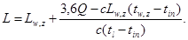
Тепловой поток, поступающий в помещение от прямой и рассеянной солнечной радиации, следует учитывать при проектировании:
вентиляции, в том числе с испарительным охлаждением воздуха, - для теплого периода года;
кондиционирования - для теплого и холодного периодов года и для переходных условий;
б) по массе выделяющихся вредных или взрывоопасных веществ:
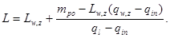
При одновременном выделении в помещение нескольких вредных веществ, обладающих эффектом суммации действия, воздухообмен следует определять, суммируя расходы воздуха, рассчитанные по каждому из этих веществ:
а) по избыткам влаги (водяного пара):
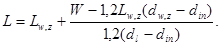
Формула Л.3. Опечатка.
Для помещений с избытком влаги следует проверять достаточность воздухообмена для предупреждения образования конденсата на внутренней поверхности наружных ограждающих конструкций при расчетных параметрах Б наружного воздуха в холодный период года;
б) по избыткам полной теплоты:
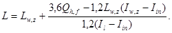
в) по нормируемой кратности воздухообмена:
L = Vpn; (Л.5)
г) по нормируемому удельному расходу приточного воздуха:
L = Ak; (Л.6)
L = Nm. (Л.7)
Lw,z - расход воздуха, удаляемого из обслуживаемой или рабочей зоны помещения системами местных отсосов, и на технологические нужды, м3/ч;
Q, Qh,f - избыточный явный и полный тепловой потоки в помещение, Вт;
с - теплоемкость воздуха, равная 1,2 кДж/(м3·°С);
tw,z - температура воздуха, удаляемого системами местных отсосов, в обслуживаемой или рабочей зоне помещения и на технологические нужды, °С;
tl - температура воздуха, удаляемого из помещения за пределами обслуживаемой или рабочей зоны, °С;
tin - температура воздуха, подаваемого в помещение, °С, определяемая в соответствии с Л.6;
W - избытки влаги в помещении, г/ч;
dw,z - влагосодержание воздуха, удаляемого из обслуживаемой или рабочей зоны помещения системами местных отсосов, и на технологические нужды, г/кг;
dl - влагосодержание воздуха, удаляемого из помещения за пределами обслуживаемой или рабочей зоны, г/кг;
din - влагосодержание воздуха, подаваемого в помещение, г/кг;
Iw,z - удельная энтальпия воздуха, удаляемого из обслуживаемой или рабочей зоны помещения системами местных отсосов, и на технологические нужды, кДж/кг;
Il - удельная энтальпия воздуха, удаляемого из помещения за пределами обслуживаемой или рабочей зоны, кДж/кг;
Iin - удельная энтальпия воздуха, подаваемого в помещение, кДж/кг, определяемая с учетом повышения температуры в соответствии с Л.6;
тpo - расход каждого из вредных или взрывоопасных веществ, поступающих в воздух помещения, мг/ч;
qw,z, ql - концентрация вредного или взрывоопасного вещества в воздухе, удаляемом соответственно из обслуживаемой или рабочей зоны помещения и за ее пределами, мг/м3;
qin - концентрация вредного или взрывоопасного вещества в воздухе, подаваемом в помещение, мг/м3;
Vp - объем помещения, м3; для помещений высотой 6 м и более следует принимать
Vp = 6А;
А - площадь помещения, м2;
N - число людей (посетителей), рабочих мест, единиц оборудования;
п - нормируемая кратность воздухообмена, ч-1;
k - нормируемый расход приточного воздуха на 1 м2 пола помещения, м3/(ч·м2);
т - нормируемый удельный расход приточного воздуха на 1 чел., м3/ч, на 1 рабочее место, на 1 посетителя или единицу оборудования.
Параметры воздуха tw,z, dw,z, Iw,z следует принимать равными расчетным параметрам в обслуживаемой или рабочей зоне помещения по разделу 5 настоящих норм, a qw,z - равной ПДК в рабочей зоне помещения.
Л.3 Расход воздуха для обеспечения норм взрывопожарной безопасности следует определять по формуле (Л.2).
При этом в формуле (Л.2) qw,z и ql следует заменить на 0,1 qg, мг/м3 (где qg - нижний концентрационный предел распространения пламени по газо-, паро- и пылевоздушной смесям).
Л.4 Расход воздуха Lhe, м3/ч, для воздушного отопления, не совмещенного с вентиляцией, следует определять по формуле
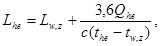
где Qhe - тепловой поток для отопления помещения, Вт;
the - температура подогретого воздуха, °С, подаваемого в помещение, определяется расчетом.
Л.5 Расход воздуха Lmt от периодически работающих вентиляционных систем с номинальной производительностью Ld, м3/ч, приводится исходя из п, мин, прерываемой работой системы в течение 1 ч по формуле
Lmt = Ldп' / 60. (Л.9)
Л.6 Температуру приточного воздуха, подаваемого системами вентиляции с искусственным побуждением и кондиционирования воздуха, tin, °C, следует определять по формулам:
а) при необработанном наружном воздухе:
tin = text + 0,001р; (Л.10)
б) при наружном воздухе, охлажденном циркулирующей водой по адиабатному циклу, снижающем его температуру на ∆t1, °С:
tin = text - ∆t1 + 0,001р; (Л.11)
в) при необработанном наружном воздухе (см. подпункт «а») и местном доувлажнении воздуха в помещении, снижающем его температуру на ∆t2, °С:
tin = text - ∆t2 + 0,001р; (Л.12)
г) при наружном воздухе, охлажденном циркулирующей водой (см. подпункт «б»), и местном доувлажнении (см. подпункт «в»):
tin = text - ∆t1 - ∆t2 + 0,001р; (Л.13)
д) при наружном воздухе, нагретом в воздухонагревателе, повышающем его температуру на ∆t3, °С:
tin = text + ∆t3 + 0,001р, (Л.14)
где р - полное давление вентилятора, Па;
text - температура наружного воздуха, °С.
Таблица М.1
|
Помещения (участок, зона) |
Помещение |
|
|
с естественным проветриванием |
без естественного проветривания |
|
|
1 |
2 |
3 |
|
Производственные |
30 |
60 |
|
Общественные и административного назначения* |
40 |
60 20** |
|
Жилые общей площадью квартиры на 1 чел. |
|
|
|
более 20 м2 |
30 |
60 |
|
менее 20 м2 |
3 м3/ч на 1 м2 жилой площади |
|
|
* Норма наружного воздуха приведена для рабочих помещений кабинетов, офисов общественных зданий административного назначения. В других помещениях общественного назначения норму наружного воздуха следует принимать по требованиям соответствующих нормативных документов. ** Для помещений, в которых люди находятся не более двух часов непрерывно. Примечание - Нормы установлены для людей, находящихся в помещении более двух часов непрерывно. |
||
Н.1 Поперечное сечение (диаметр, высота или ширина по наружному измерению) металлических воздуховодов необходимо принимать следующих размеров, мм:
|
50 |
56 |
63 |
71 |
80 |
90 |
100 |
112 |
125 |
140 |
160 |
180 |
|
200 |
224 |
250 |
280 |
315 |
355 |
400 |
450 |
500 |
560 |
630 |
710 |
|
800 |
900 |
1000 |
1120 |
1250 |
1400 |
1600 |
2000 |
1800 |
2240 |
2500 |
2800 |
|
3150 |
3350 |
3550 |
4000 |
4500 |
5000 |
5600 |
6300 |
7100 |
8000 |
9000 |
10000 |
Соотношение сторон прямоугольных сечений не должно превышать 6,3. Размеры воздуховодов следует уточнять по данным заводов-изготовителей.
Н.2 Толщину листовой стали для воздуховодов, по которым перемещается воздух температурой не выше 80 °С, следует принимать, мм, не более:
а) для воздуховодов круглого сечения диаметром, мм:
до 200 включ.... 0,5
от 250 » 450 »......... 0,6
» 500 » 800 »......... 0,7
» 900 » 1250 »......... 1,0
» 1400 » 1600 »......... 1,2
» 1800 » 2000 »......... 1,4
б) для воздуховодов прямоугольного сечения размером большей стороны, мм:
до 250 включ ... 0,5
от 300 » 1000 »......... 0,7
» 1250 » 2000 » 0,9
в) для воздуховодов прямоугольного сечения, имеющих одну из сторон св. 2000 мм, и воздуховодов сечением 2000×2000 мм толщину стали следует обосновывать расчетом.
Для сварных воздуховодов толщина стали определяется по условиям производства сварных работ.
Н.3 Для воздуховодов, по которым предусматривается перемещение воздуха температурой более 80 °С или воздуха с механическими примесями или абразивной пылью, толщину стали следует обосновывать расчетом.
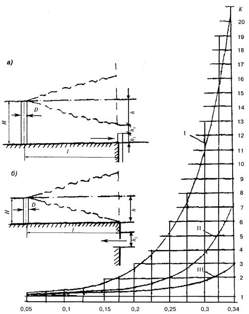
а - расположение источника над зоной всасывания наружного воздуха приемным устройством (высота трубы источника Н = 2h1 + h); б - то же, над кровлей здания (высота трубы источника Н = h);
h - расстояние по вертикали, м, горизонтальной оси струи;
h1 - высота отверстия для приема наружного воздуха, м;
l - расстояние между устьем источника и приемным устройством для наружного воздуха, м.
[1] ОНД-86 Методика расчета концентраций в атмосферном воздухе вредных веществ, содержащихся в выбросах предприятий/ Госкомгидромет СССР
Ключевые слова: отопление, вентиляция, кондиционирование воздуха, нормы, правила